热核聚变与聚变系统中的功率产生和损失
发生一次放能核反应，与建成一个能够持续输出净能量的系统，是两个层次的问题。本讲从束靶反应为什么难以获得净能量出发，解释热核聚变如何利用随机热运动，再逐项建立聚变产能、热传导和辐射损失的表达式。理解这几项之后，才能在下一讲讨论零维功率平衡、劳逊判据和点火。
全篇中，能量、功率、功率密度分别使用J、W、W/m³；表格特别标出的数值使用MW/m³。温度作为能量使用时，写清eV或keV；换算到焦耳时使用 \(1\,\mathrm{eV}=1.602176634\times10^{-19}\,\mathrm J\)。除非另有说明，\(n\) 表示电子数密度，D–T燃料等比例、完全电离且电子与离子同温。
1. 选择聚变反应：不同指标有不同答案
上讲的主要反应包括D–T、D–D的两个分支、D–³He和p–¹¹B。D–T每次释放17.6 MeV，D–D两个分支分别生成T+p、³He+n；D–³He和p–¹¹B的主反应产物是带电粒子。中子与锂的反应在这里承担氚增殖功能：⁶Li吸收中子生成T和α并放能；⁷Li相关反应仍放出中子，但吸收能量。不要把这两个具体反应的特点推广成“所有中子反应都如此”。
课初三道题分别比较不同指标：
| 评价问题 |
课件答案 |
物理原因 |
| 反应性最有利 |
D–T，B |
在相对较低温度具有较大的反应率系数 |
| 燃料丰富性最有利 |
D–D，A |
氘资源丰富，不以天然稀少的氚、³He作为主燃料 |
| 有利于提高产能发电效率 |
D–³He和p–¹¹B，C、D |
带电产物为直接能量转换提供可能 |
第三题的答案是转换方式的潜在优势，并不等于这些路线已经更容易发电。中子的动能通常先转成热再通过热机发电；带电粒子有可能通过电磁方式直接取能。D–³He体系仍会有伴生D–D等反应，不能理解成实际装置绝无中子。
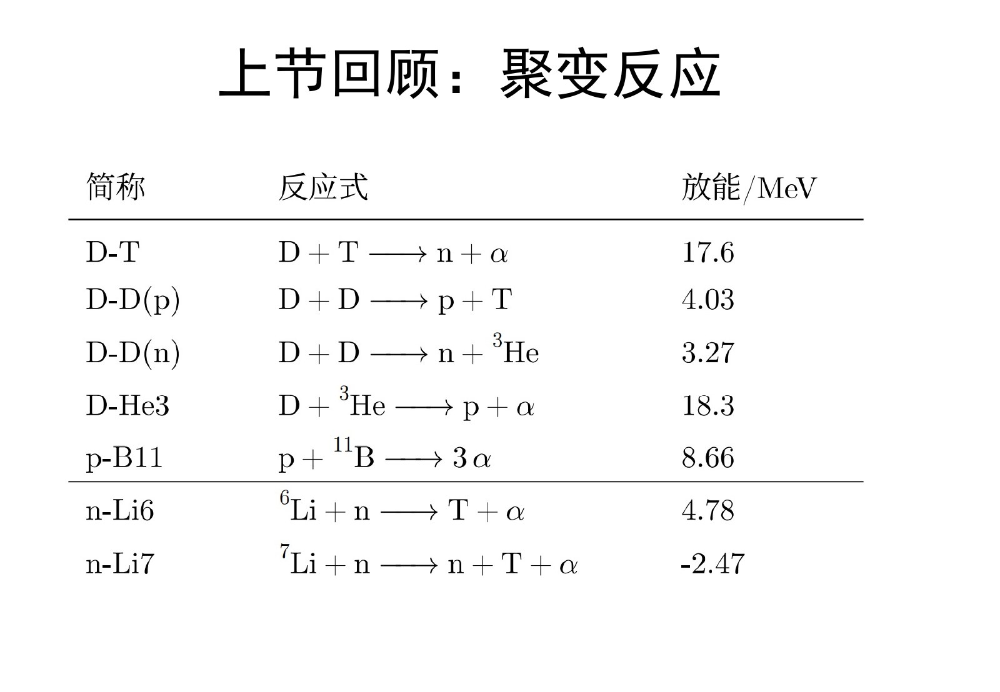
课堂回顾T01–T03 · 来源与订正
自测：为什么目前主要研究D–T，而不是只选带电产物反应？
聚变首先要在可实现的温度、密度和约束下产生足够反应。反应性难关尚未解决时，转换效率的潜在优势不足以抵偿更高的反应条件要求。
2. 聚变反应不等于聚变能源
能源系统需要比较总产出与维持运行的投入。即使某个物理环节的产出略大于投入，经过加热、电源和热电转换等环节后，系统也可能没有净电力输出。两个效率均为80%的连续环节，总效率只有64%；热电转换若只有30%–40%，更需要在前级留出余量。因此课件强调“产出远大于投入”，这是工程余量的要求，不是一个对所有系统都固定的十倍判据。
化学燃烧的点火能相对释放能量很小；裂变的链式反应使维持反应具有不同的物理机制。聚变的困难在于，维持反应物的高能状态本身可能消耗大量功率。检测到中子、氦或少量D–T反应，只能证明发生了核反应，不能单凭这一点断言实现能源增益。
这里也要分清系统边界：从高温等离子体流出的热量是等离子体的损失，却可能被外部包层收集，成为电站的热输入。后续讨论必须先说明是在给等离子体算账，还是给整座电站算账。
课堂回顾T04 · 课件PDF8
自测：反应释放17.6 MeV，而入射离子仅100 keV，为什么仍不能直接说赚了176倍？
只有一小部分入射离子发生聚变，其余离子的加速能及设备损耗也必须计入投入；此外还要计入取能和加热效率。
3. 束流能量、质心能量与温度
单个带单位电荷的离子经过电势差 \(\Delta V\)，获得的定向动能为 \(e\Delta V\)。因此100 kV对应100 keV。这个事实说明让少数粒子达到核反应所需能区在物理上并不困难；它并未说明能够经济地维持大量反应。
温度描述相对于平均流动的随机运动，不能把所有定向动能都算成温度。一个高速而能散很窄的离子束，可以具有很高的平均定向能量，而束流自身的随机能量较小。只有在相应的热分布意义下，才使用 \(k_BT\) 描述热能尺度。\(1\,\mathrm{eV}\) 对应约11600 K，10 keV对应约1.16亿K。
比较截面峰值还要核对参考系。若氚靶静止，氘束的实验室能量为 \(E_D\)，则非相对论近似下
\[
E_{\rm cm}=\frac{m_T}{m_D+m_T}E_D\simeq\frac35E_D.
\]
所以约65 keV的质心能量对应约108 keV氘束能量，两张图上约65和100 keV的峰位置可以是在表达同一能区。该峰是截面随碰撞能量的峰，不是反应率系数随温度的峰。
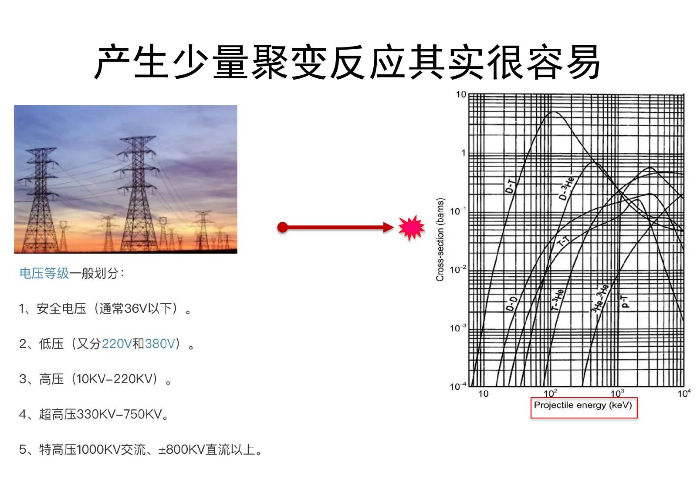
课堂以早期人工聚变和一个“用高压加速就能发电”的提案说明区别。历史例子中的D–D工作见Oliphant、Harteck和Rutherford的1934年论文记录；课件所写1932年与该记录有出入，见来源订正。这些故事用于说明反应与能源的差别，不提供装置制作步骤。
课堂回顾T05–T07 · 教材第四章PDF1–2
自测：给定100 keV束能，能否直接把束流说成十亿度等离子体？
不能。束能包含平均定向运动；温度对应围绕平均运动的随机能量分布。把两者直接等同会误判束靶与热核体系。
4. 束靶反应的主要竞争者：库仑散射
入射离子不只与靶核发生聚变，还会与电子和离子通过电磁相互作用交换能量、改变方向。固体靶的原子尺度约为 \(10^{-10}\,\mathrm m\)，几何面积的量级约为 \(10^8\) barn，远大于典型聚变截面。这只是帮助理解电子阻止效应的尺度比较，不是严格的电子碰撞截面计算。
对离子靶，先考虑经典两体库仑散射。令相对速度为 \(v\)，约化质量为 \(\mu\)，散射角为 \(\theta\)，瞄准距离为 \(b\)，并记
\[
K=\frac{Z_1Z_2e^2}{4\pi\varepsilon_0},\qquad
b_{90}=\frac{K}{\mu v^2},\qquad
\cot\frac\theta2=\frac b{b_{90}}.
\]
当 \(b=b_{90}\) 时，散射角为90°。以 \(b\le b_{90}\) 对应的大角度散射有效面积定义
\[
\sigma_{90}=\pi b_{90}^2
=\frac{Z_1^2Z_2^2e^4}{16\pi\varepsilon_0^2\mu^2v^4}.
\]
它随速度四次方的倒数变化，因此低能区库仑偏转尤其显著。“90°散射”表示原束方向被显著改变，不是总能量凭空消失。若粒子仍留在体系内，能量可转入随机运动或别的粒子；对一个依赖定向束能的方案，这仍会破坏所需的束流状态。
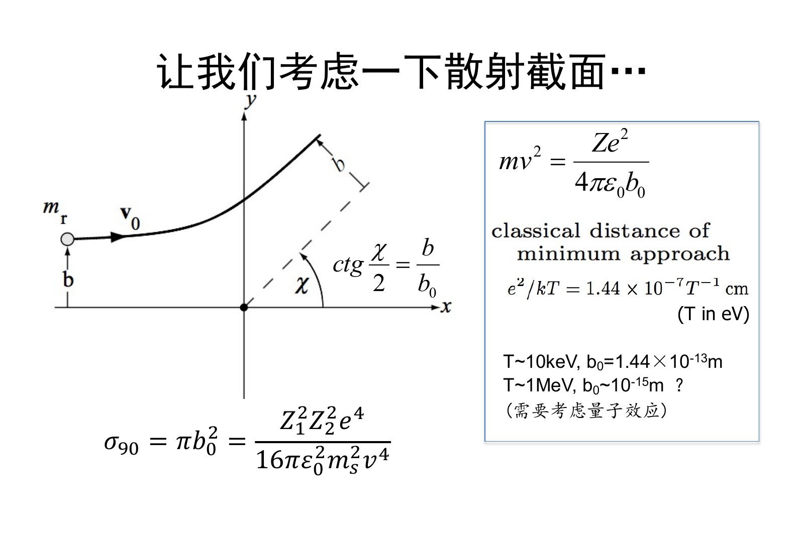
必须区分两个长度：若 \(E_{\rm rel}=\mu v^2/2\)，则 \(b_{90}=K/(2E_{\rm rel})\)；正碰时的最近距离是 \(r_{\min}=K/E_{\rm rel}=2b_{90}\)。课件把90°瞄准距离与最近接近距离的称呼、温度估算并置，不能直接当作同一个严格定义。课件给出的 \(1.44\times10^{-13}\,\mathrm m\) 代入 \(\pi b^2\) 确为约651 barn；若明确取 \(E_{\rm rel}=10\,\mathrm{keV}\)，则 \(b_{90}\simeq7.20\times10^{-14}\,\mathrm m\)，对应约163 barn。后续计算要先固定能量口径，不能混用系数。
课堂回顾T08–T09 · 课件PDF12–14
自测：大角度散射把定向能转成随机能，是否意味着体系总能量全部丢失？
不是。对定向束而言失去了有用的束特征；对封闭热体系而言，散射本身可以只是内部能量再分配。真正跨越系统边界的能量才计入该系统的净损失。
5. 多次小角散射为什么不能相互抵消
粒子遇到一个离子只偏转一点，不表示经历许多次碰撞后仍保持原方向。以独立、平均值为零的小偏转 \(\delta\theta_j\) 为例，平均偏转可以为零，但方差会累加：
\[
\left\langle\sum_j\delta\theta_j\right\rangle=0,
\qquad
\left\langle\left(\sum_j\delta\theta_j\right)^2\right\rangle
=\sum_j\langle\delta\theta_j^2\rangle.
\]
这与醉汉随机行走相同：向左、向右没有平均偏好，典型离开起点的距离仍会增加。许多小角散射共同造成速度方向的扩散和束流热化。
经典弱耦合近似中，综合不同瞄准距离的贡献会出现库仑对数。课件以德拜长度作为远端截断，以近碰撞尺度作为近端截断，写成
\[
\ln\Lambda\simeq\ln\frac{\lambda_D}{b_{\min}},\qquad
\sigma_s\sim2\ln\Lambda\,\sigma_{90}.
\]
课件示意 \(2\ln\Lambda\sim40\)。这里的 \(\sigma_s\) 是用于累计偏转的有效尺度，不等于没有截断的卢瑟福总截面；小距离端在必要时还要考虑量子效应。掌握“小偏转会累积”的图像是基本要求，完整推导是选做。
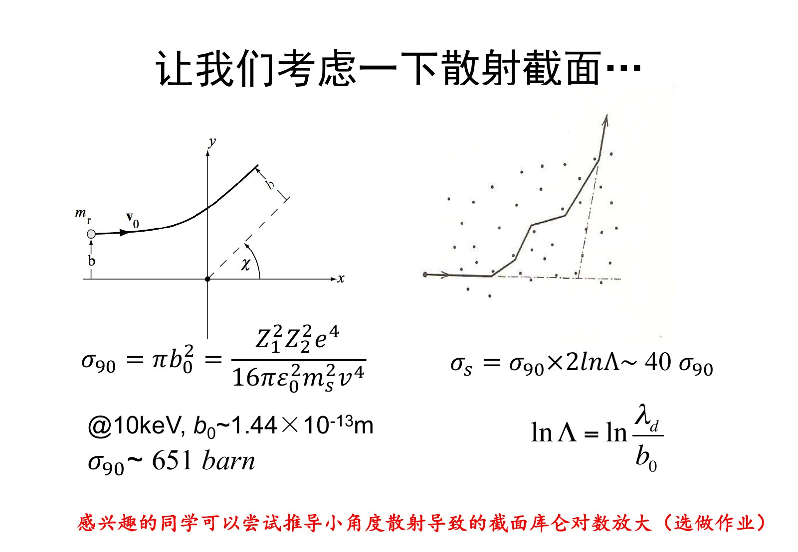
课堂回顾T10 · 课件PDF14
自测：平均偏转为零，为什么束流仍会展宽？
平均值只描述分布中心，方差描述分布宽度。独立小偏转的方差相加，所以中心可以不动而方向分布越来越宽。
6. 用一次能量核算理解束靶的困难
课件用20 keV氘束打氚靶作数量级说明：约 \(10^5\) 个氘离子发生显著散射时，至多约一个发生聚变。即使只按这些离子的束能计算，投入尺度已经是
\[
20\,\mathrm{keV}\times10^5=2\times10^9\,\mathrm{eV}=2000\,\mathrm{MeV},
\]
而一次D–T反应只释放17.6 MeV，二者之比约114。这个估算还没有计入加速效率等工程损耗，足以说明低能束靶方案不能只看“单次核反应的能量比”。课件的 \(10^5\) 是从图上读出的示例量级，不应脱离靶条件、参考系和散射定义当作普适概率。
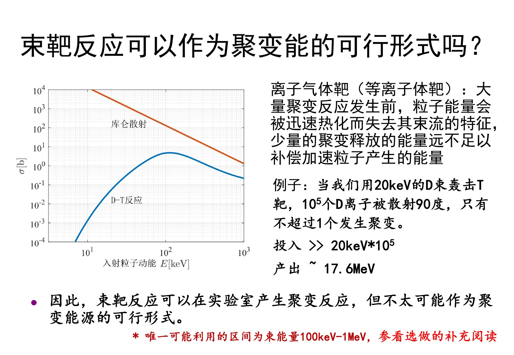
课堂没有把所有非热方案一概判为数学上不可能，而是指出某些100 keV–1 MeV能区值得进一步计算。即使简单模型出现小幅正收益，完整系统仍需扣除热化、电子阻止、维持束分布、辐射和设备效率的代价。选读论文的任务正是检查这些假设，而不是只拿曲线交点证明可发电。
ZETA例子进一步提醒：检测到聚变中子仍不足以证明已得到所期待的热核状态。定向束靶反应与近似各向同性的热分布可产生不同的中子角分布；应联合能谱、角分布和等离子体参数判断。角分布受运动学、几何及分布函数影响，不把单一判据绝对化。
课堂回顾T11–T13 · 课件PDF15–16
自测：为什么“中子确实来自聚变”与“已实现热核聚变能源”可以同时一真一假？
中子来源回答的是核反应是否发生；热核状态、净功率和工程收益还需要各自的证据。束靶过程也会产生真实的聚变中子。
7. 热核聚变利用的是热运动
Thermonuclear中的“热”首先指thermal，即粒子通过随机热运动相遇。它不仅仅是hot，即温度数值很高。对D–T而言，为获得足够反应率，热运动确实还需要高温；两个含义相关，却不能互相替代。
课堂用高尔夫球与多洞场地作比喻：定向束靶希望一个粒子击中指定目标；在被约束的热体系中，粒子本来就向各方向运动，没与这个核聚变，仍可与其他核相遇。弹性散射重新分配能量和方向，不必每次都重新建立一束完全相同的定向粒子。不过这个优势成立的前提，是粒子和热量能够被保持足够久；随机运动本身不会创造额外能量。
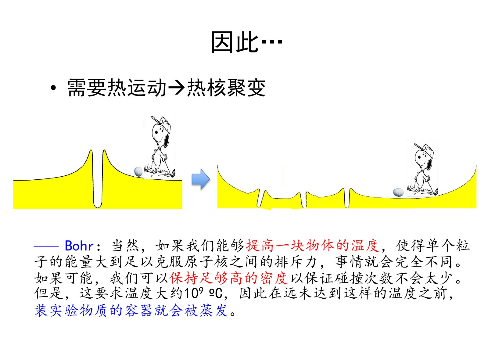
麦克斯韦分布还具有高能尾部。反应率系数是对整个相对速度分布的平均：
\[
\langle\sigma v\rangle=\int\sigma(v)v f_{\rm rel}(\mathbf v)\,d^3v.
\]
因此温度不必达到截面峰所对应的约65 keV，10–20 keV的热分布中也有较高能的相对碰撞。降低平均热能投入，同时利用高能尾部的反应，是热核方案的重要特点。但不是每个粒子都达到同一能量，也不是超过某一温度后便可不受其他约束地增益无限。
课件的商业宣传例子把“精确瞄准”直接当作优于“随机碰撞”的依据。正确评价应追问束流热化有多快、有效反应概率多大、损失如何补偿；本讲并未完成对具体企业当前技术状态的独立审查。
课堂回顾T14–T17 · 教材4.1
自测：高能尾部为什么允许平均温度低于截面峰能量？
温度规定分布宽度，而不是给所有粒子同一个动能。较高相对能量的碰撞仍占一定份额，并因截面较大而显著贡献热平均反应率。
8. 除温度以外，还要密度和保持时间
加热使原子逐渐电离，形成自由电子和离子组成的等离子体。D–T燃料在keV量级已充分电离；高Z杂质是否完全剥离需要另行判断，不能由氢同位素的结论直接推广。
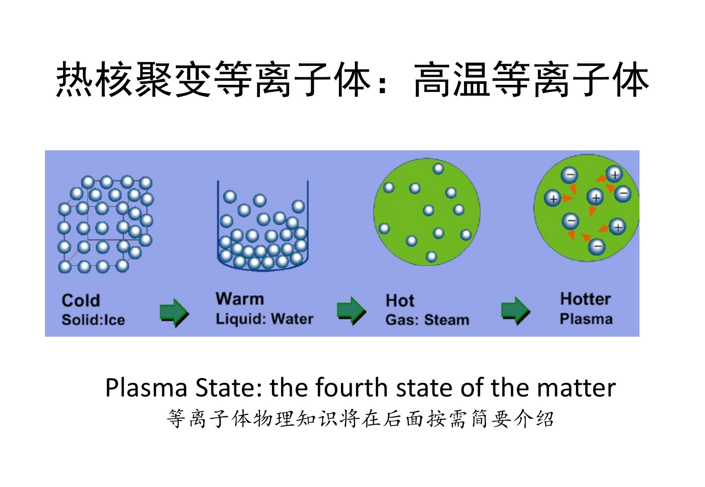
高温意味着一次相遇可能进入有利的反应能区；密度决定单位体积内相遇的机会；能量保持时间决定在冷却之前能经历多少次有效相遇。课上继续使用球与洞的比喻：洞稀疏就需要多运动一段时间，球若跑出边界或在滚动中失去足够能量，尚未反应就退出了有效过程。
因此必须同时研究粒子约束与能量约束。它们相互关联，却不是同一个时间常数。接下来先用功率平衡把“保温”这件事定量化。本讲只建立各项功率，完整的约束条件留到下一讲。
课堂回顾T18–T19 · 教材印刷32
自测：温度已经达到10 keV，为什么仍不能保证成为能源？
密度过低时反应少，损失过快时来不及产生足够反应，还要核算产物能量留存与外部转换效率。
9. 聚变功率密度：四分之一从哪里来
不同种燃料的热核反应率为 \(n_1n_2\langle\sigma v\rangle\)，乘每次反应释放的能量 \(E_f\)，得到
\[
S_f=n_1n_2\langle\sigma v\rangle E_f.
\]
对纯D–T、固定电子密度 \(n=n_D+n_T\)，令氘的数目份额为 \(x\)，则 \(n_Dn_T=x(1-x)n^2\)。该乘积在 \(x=1/2\) 最大，因此
\[
n_D=n_T=\frac n2,\qquad S_f=\frac14n^2\langle\sigma v\rangle E_f.
\]
这里的 \(1/4\) 来自配比；它不是相同粒子反应为避免重复计数而出现的 \(1/2\)。若燃料带有不同电荷数或另有限定条件，最优配比需要重新推导，不能直接照抄。
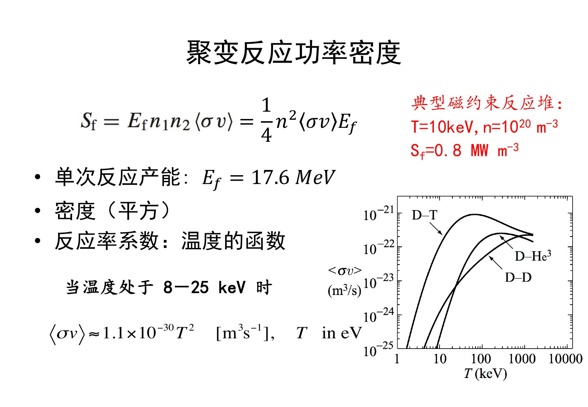
课件在8–25 keV区间使用近似
\[
\langle\sigma v\rangle\simeq1.1\times10^{-30}T_{\rm eV}^{\,2}\;\mathrm{m^3/s}.
\]
取 \(T=10\,\mathrm{keV}=10^4\,\mathrm{eV}\)，得到 \(\langle\sigma v\rangle\simeq1.1\times10^{-22}\,\mathrm{m^3/s}\)。取 \(n=10^{20}\,\mathrm{m^{-3}}\)，并将17.6 MeV换成 \(2.8198\times10^{-12}\,\mathrm J\)，有
\[
S_f=\frac14(10^{20})^2(1.1\times10^{-22})(2.8198\times10^{-12})
\simeq7.75\times10^5\,\mathrm{W/m^3}=0.775\,\mathrm{MW/m^3}.
\]
这就是课件约0.8 MW/m³的来源。量纲也吻合：\(\mathrm{m^{-6}\,m^3s^{-1}\,J=W/m^3}\)。若温度降到100 eV，已经超出拟合区间，不能机械使用平方律给出精确反应率。
课堂回顾T20 · 教材式4.2
自测：保持温度、配比不变，电子密度加倍，聚变功率密度怎样变化？
增加到四倍。这是当前简化条件下的密度平方关系；并不说明约束时间及所有损失也保持不变。
10. 热传导：从热流到体积平均损失
热量传递的基本机制是对流、传导和辐射。“热交换”是过程的概括，不是并列的第四种机制。对流由物质整体流动携带能量；本讲最简模型避免把高温燃料直接流出系统的对流作为主要损失项。这是一项模型简化，并不意味着真实聚变等离子体没有粒子输运、排灰或边界流动。
高温芯部与较冷边界之间存在温度梯度，因而存在向外的热流。热流密度 \(\mathbf q\) 的单位是W/m²。以单一物种的能量温度 \(\Theta=k_BT_K\) 为变量时，课件所用扩散写法是
\[
\mathbf q=-\kappa\nabla\Theta=-\frac32n\chi\nabla\Theta,
\qquad [\chi]=\mathrm{m^2/s}.
\]
若改用K温标，系数中要保留 \(k_B\)；若把温度数值直接写成eV，则要同时处理eV到J的转换。电子、离子可有各自的 \(\chi\) 和热流，最后应求和。这里用一个宏观系数，是为避免在本讲展开复杂的输运理论。
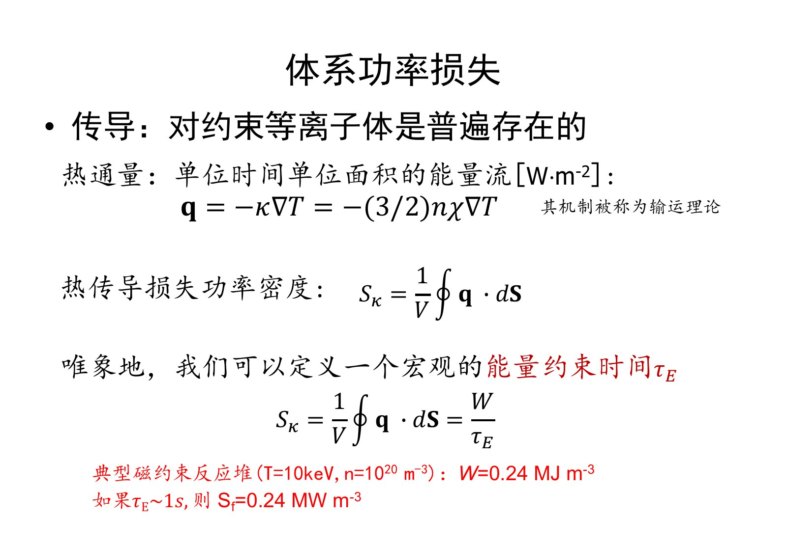
用指向体系外侧的面积元积分可得传导功率，再除以体积得到平均损失功率密度：
\[
P_\kappa=\oint_{\partial V}\mathbf q\cdot d\mathbf S,
\qquad S_\kappa=\frac{P_\kappa}{V}
=\frac1V\int_V\nabla\cdot\mathbf q\,dV.
\]
注意最后一个式子是散度的体积平均，不能在非均匀体系中直接去掉积分，写成某一点的散度。量纲上，热流W/m²乘面积得到W，再除体积得到W/m³。
如果温度变化的尺度为 \(L\)，粗略估计 \(S_\kappa\sim n\Theta\chi/L^2\)，于是保温时间的尺度约为 \(L^2/\chi\)。这只说明尺寸和输运强度为何会影响约束，具体几何系数与定标律仍需模型或实验。
课堂回顾T21–T23 · 教材式4.3–4.4
自测：热扩散系数与流速为什么不能混为一谈？
流速的量纲是m/s，扩散系数是m²/s。扩散刻画随机运动造成的分布展宽，典型距离平方随时间增长。
11. 能量约束时间与内能的统计范围
以 \(W\) 表示体积平均热内能密度，定义
\[
S_\kappa=\frac W{\tau_E}.
\]
若只有该传导损失、没有加热，且 \(\tau_E\) 在考察过程中可近似为常数，则
\[
\frac{dW}{dt}=-\frac W{\tau_E},\qquad
W(t)=W(0)e^{-t/\tau_E}.
\]
经过一个 \(\tau_E\)，内能降至初值的 \(1/e\)，不是“降到零”，也不是“降到一半”。若温度变化使输运系数显著变化，衰减可以偏离单一指数。
保温杯的比喻很直观：同样装热水，保温性能越好，冷却越慢，约束时间越长。若用外部加热恰好补偿损失，维持内能不变，则在只有这项损失的模型中，\(\tau_E=W/S_h=U/P_h\)，其中 \(U=WV\)。有辐射或其他通道时，要写出完整平衡，不能在分母任意换成总加热功率又把 \(\tau_E\) 继续解释成只针对传导的时间。
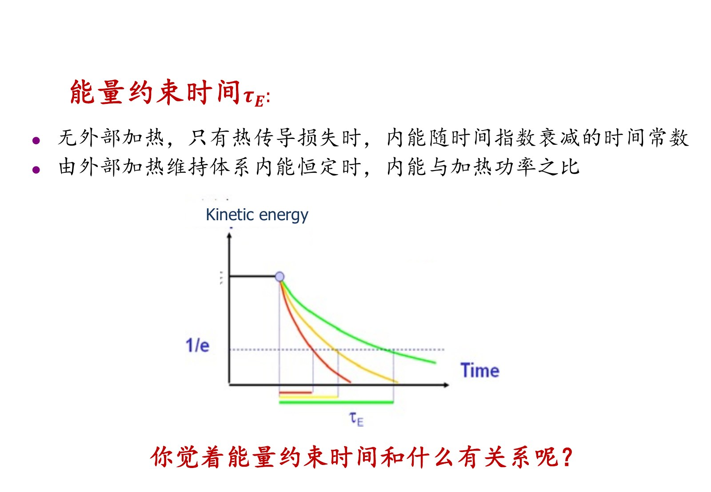
D–T的密度口径需要特别统一。对完全电离的单电荷燃料，\(n_i=n_e=n\)；同温时
\[
W_e=\frac32n\Theta,\quad W_i=\frac32n\Theta,
\quad W=W_e+W_i=3n\Theta.
\]
在10 keV、\(10^{20}\,\mathrm{m^{-3}}\) 下，每一种的内能约0.240 MJ/m³，合计约0.481 MJ/m³。若 \(\tau_E=1\,\mathrm s\)，合计传导损失约0.481 MW/m³。课件示例的0.24与单一物种数值吻合，教材式(4.4)明确把电子和离子相加；本讲做完整D–T热内能核算时采用后者，保留课件0.24为对照。
课堂回顾T23–T25 · 教材印刷32–33
自测：装置维持高温1000秒，能否据此说能量约束时间也是1000秒？
不能。放电时长是实验运行多久；能量约束时间是给定状态下储能与相应损失功率的比值。持续加热可以维持很长时间，同时能量仍在很短的时间尺度上不断补入、流出。
12. 轫致辐射：必不可少的损失项
电子在离子库仑场中改变速度，作为加速电荷会辐射电磁波，这就是轫致辐射。Bremsstrahlung对应制动辐射。课堂的古车“轫”字故事用于帮助记忆术语；本讲学习重点是辐射由什么过程产生、与哪些参数有关。
非相对论单电子的辐射功率可写成
\[
P=\frac{e^2a^2}{6\pi\varepsilon_0c^3}
=\frac{\mu_0e^2a^2}{6\pi c}.
\]
库仑加速度的量级随 \(Z/b^2\) 增加。对碰撞过程积分、再对电子速度分布及离子种类求和，就得到热等离子体的辐射功率。课件PDF31列出了这条推导路线，课堂不要求逐项完成碰撞积分。
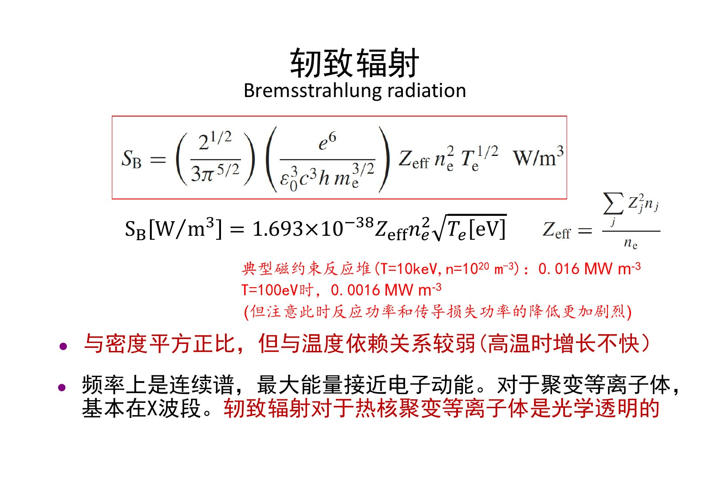
用于数值计算的式子为
\[
S_B=1.693\times10^{-38}Z_{\rm eff}n_e^2\sqrt{T_e[\mathrm{eV}]}\quad\mathrm{W/m^3},
\qquad
Z_{\rm eff}=\frac{\sum_j n_jZ_j^2}{n_e}.
\]
密度以m⁻³计。教材用keV时，系数约为 \(5.355\times10^{-37}\)；这是温度单位变换，不是两套不同物理规律。这里 \(Z_j\) 表示离子的实际电荷数，\(n_e=\sum_jn_jZ_j\)。纯完全电离D–T有 \(Z_{\rm eff}=1\)。
在本讲参数下，10 keV对应 \(S_B\simeq0.0169\,\mathrm{MW/m^3}\)，100 eV对应 \(0.00169\,\mathrm{MW/m^3}\)。温度降低100倍，它只降低10倍。相反，在适用区间内聚变反应率对温度的增长快得多，因而较低温阶段更容易受辐射约束。不要把这个趋势说成“轫致辐射高温增长很快”。
轫致辐射具有连续谱，单个电子一次发出的光子能量受该电子可用动能限制；热分布没有在 \(k_BT_e\) 处突然截断。对于本讲稀薄高温磁约束等离子体，重要辐射处在X射线等波段，常可近似为光学薄：光子产生后较容易逃逸，带走热能。这里“X”指X射线，不是微波工程的X频段。
课堂回顾T26–T28 · 教材式4.5–4.7
自测：为什么仅提高密度不能自动战胜轫致辐射？
在温度、配比和有效电荷数不变时，聚变功率和轫致辐射都与密度平方成正比，二者之比不会仅因密度升高而改善。
13. 回旋辐射：发射功率不等于净逃逸功率
带电粒子在磁场中作回旋运动，即使速率不变，速度方向也在改变，仍有加速度并产生辐射。课件把回旋与同步辐射并列讨论；在更精细的理论中，非相对论与相对论辐射的频谱还需区别。本讲使用非相对论热电子的估算式
\[
S_C=6.21\times10^{-20}B^2n_eT_e[\mathrm{eV}]\quad\mathrm{W/m^3}.
\]
磁场以T计。它对密度为一次方，对温度为一次方，对磁场为平方。回旋基频为 \(eB/(2\pi m_e)\)，谐波写为
\[
f_\ell=\ell\frac{eB}{2\pi m_e},\qquad \ell=1,2,\ldots
\]
这里用 \(\ell\) 表示谐波序数，避免与密度 \(n\) 混淆。在6 T时基频约168 GHz，处于毫米波范围。
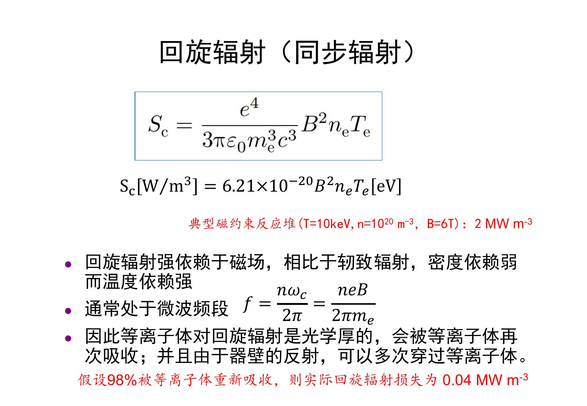
代入10 keV、\(10^{20}\,\mathrm{m^{-3}}\)、6 T，发射功率密度约2.24 MW/m³。这个数比聚变功率大，却不能立即判定体系失败，因为大量辐射可能被等离子体再次吸收，金属壁反射也会增加再穿越的机会。
若仅作示例，假设再吸收比例为98%，则净损失约为
\[
S_{C,\rm net}=(1-0.98)S_C\simeq0.0447\,\mathrm{MW/m^3}.
\]
课件PDF33把它约为0.04；PDF36表格的0.024与同一公式、参数不一致。98%也不是普适常数，实际吸收与频率、温度、密度、路径和壁面反射有关。高温或强磁场会改变损失的重要性，因此“本例较小”不等于“任何聚变路线都可忽略”。
课堂回顾T29 · 教材式4.8
自测：若再吸收比例由98%降为90%，发射功率不变，净损失增加几倍？
逃逸比例由2%变成10%，净损失增为五倍。因此不能只报总发射功率，也不能忽略吸收假设。
14. 为什么不能直接套用黑体辐射
黑体辐射定律给出的是特定热平衡与吸收条件下的表面辐射通量：
\[
F_{bb}=\sigma_{\rm SB}T_K^4
\simeq1.03\times10^9T_{\rm eV}^{\,4}\quad\mathrm{W/m^2}.
\]
若不检查条件就代入10 keV，会得到约 \(10^{19}\,\mathrm{MW/m^2}\) 的巨大数值。但本讲稀薄磁约束等离子体并不是一个对相关频段完全吸收、以核心温度形成黑体表面的物体，因而不能将该数值作为它的真实损失。
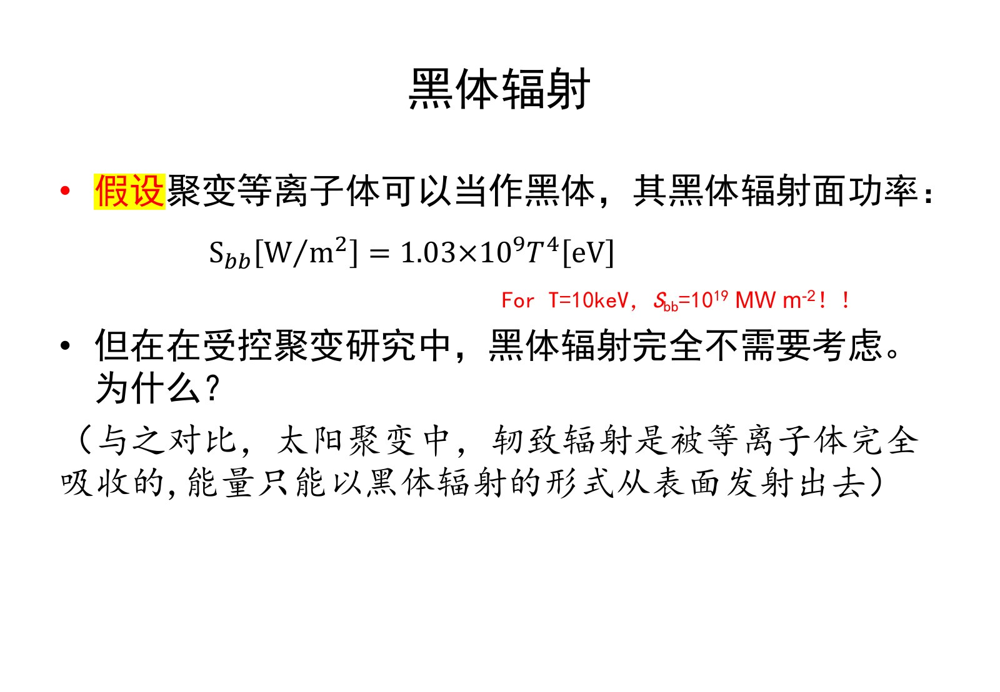
太阳内部对重要辐射很不透明，能量经多次相互作用向外输运，最终从温度低得多的光球发出近似黑体光谱；绝不是用太阳核心温度直接乘外表面积。本讲装置则需要按轫致、回旋等发射与吸收机制计算。“不套黑体公式”不代表没有电磁辐射损失，也不代表所有惯性约束或高密度等离子体都可作相同简化。
表面通量W/m²与体积功率密度W/m³还必须区分。若要比较，需结合面积、体积和辐射输运；不能只把两列数值直接相减。
课堂回顾T30 · 教材印刷33
自测：为什么“温度高，所以一定按黑体辐射巨大功率”不是有效推理？
温度只是一项状态参数。使用黑体定律还要求相应的吸收、热平衡和光学厚度条件；这些条件不成立时，应使用具体辐射机制。
15. 线辐射与高电荷杂质
线辐射来自束缚电子在能级之间跃迁，具有特征频率。充分电离的D–T芯部没有氢同位素的束缚电子，因此这类线辐射较弱；在温度较低的边界区仍可出现。高Z杂质即使处于较高温度，也可能保留内层电子，不能照搬氢的结论。
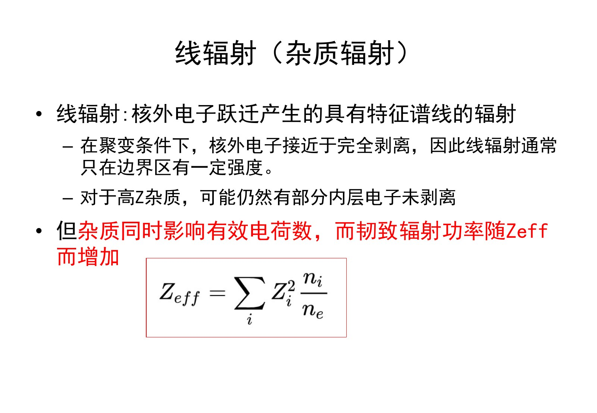
离散谱线并不自动意味着总功率小。总辐射功率取决于谱线强度及跃迁过程；多条强线也能带走显著能量。在本讲的最简纯D–T模型里略去线辐射，应归因于燃料电离状态及所选工作条件，而不是“谱线窄，所以积分一定小”。
杂质还会通过 \(Z_{\rm eff}\) 增强轫致辐射。设一种杂质的实际电荷数为 \(Z\)，其数密度为 \(n_Z\)，其余为单电荷燃料，则由准中性条件
\[
n_e=n_f+Zn_Z,\qquad
Z_{\rm eff}=1+Z(Z-1)\frac{n_Z}{n_e}.
\]
所以高电荷杂质的少量增加也可能显著提高有效电荷数。这里是 \(Z_j^2\) 进入加权求和，而 \(S_B\) 在固定电子密度、温度下与 \(Z_{\rm eff}\) 一次方成正比，不是再与 \(Z_{\rm eff}^2\) 成正比。
课堂回顾T31 · 教材印刷34上半页
自测：相同电子密度、温度下，有效电荷数从1升到2，轫致辐射增加几倍？
增加到两倍。不可把定义内部的离子电荷平方，再错误地变成公式外的有效电荷数平方。
16. 将各项放在同一张功率表中
以下统一采用纯D–T、\(n_e=n_i=10^{20}\,\mathrm{m^{-3}}\)、\(T_e=T_i\)、\(\tau_E=1\,\mathrm s\)、\(B=6\,\mathrm T\)、\(Z_{\rm eff}=1\)，回旋辐射示例取98%再吸收。传导项使用教材的电子、离子合计内能。改变温度但固定约束时间和吸收比例只是对比参数依赖的思想实验，并非真实装置的完整运行路径。
| 体积功率密度 |
10 keV（MW/m³） |
100 eV时如何变化 |
| 聚变 \(S_f\) |
0.775，约0.8 |
已超出平方拟合区间，须重新查反应率；课件给出远小于高温值的示意 |
| 传导 \(S_\kappa\)，电子＋离子 |
0.481 |
0.00481；按固定约束时间线性缩放 |
| 轫致 \(S_B\) |
0.0169 |
0.00169；温度降低100倍而此项只降低10倍 |
| 回旋总发射 \(S_C\) |
2.24 |
0.0224；固定磁场时线性缩放 |
| 回旋净损失 \(0.02S_C\) |
0.0447 |
0.000447；以相同吸收假设作比较 |
课件PDF36保留了课堂原表，可用于对照；其中传导0.24是单物种数值，回旋0.024与PDF33不一致，不能把两列作为一套已经统一的精确数据使用。
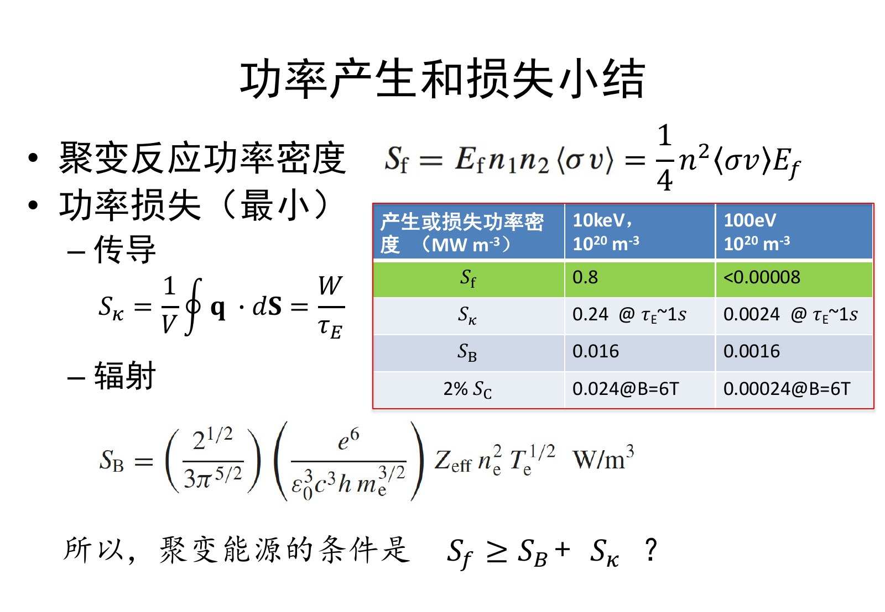
在这个示例下，传导是主要损失；轫致与回旋净损失较小，但后两者为何较小有不同原因：轫致的发射本身较小，回旋则是总发射大而假设再吸收强。低温时聚变反应骤弱，轫致相对变得重要；高温、强磁场或杂质增加时，原先略去的项需要重新检查。
课堂回顾T32 · 来源中的复算与数值冲突
自测：哪一项主要因为“再次吸收”而从大数值变成较小净损失？
回旋辐射。轫致辐射在本讲光学薄近似下，产生的辐射较容易逃逸；两项不能使用相同的忽略理由。
17. 为什么总聚变功率大于损失仍未回答点火
若直接比较 \(S_f\) 与 \(S_B+S_\kappa\)，漏掉了“聚变能量是否留在等离子体内”这一问题。D–T反应中，约3.5 MeV由α粒子携带，约14.1 MeV由中子携带。理想情况下α粒子有助于自加热，而中子通常离开等离子体，在外部结构中沉积能量。
用最简D–T图像承接下一讲，忽略其他项时可写为
\[
\frac{dW}{dt}=S_{h,\rm ext}+S_\alpha-S_\kappa-S_B,
\qquad S_\alpha\simeq\frac{3.5}{17.6}S_f\simeq\frac15S_f.
\]
这里仍假设α能量充分沉积。零外加热的点火要求自加热足以补偿损失；有外加热的稳态则可由两者共同补偿。按前面的10 keV示例，α功率约0.154 MW/m³，不能因总聚变0.775大于某些损失便认定已经点火。
从电站边界看，传导和辐射带出的热量又可能被回收，聚变能量也需经过转换效率才能变成电力。因此“等离子体点火”“科学增益”“净电力输出”要分别定义。这正是本讲末尾问题的用意，详细劳逊判据及增益公式属于下一讲，不作为本次已授内容展开。
课堂回顾T33 · 教材4.3作为衔接
自测：为什么不能把17.6 MeV全部当作D–T等离子体的自加热？
大部分由中子携带并离开等离子体；带电α粒子的份额才有机会直接沉积于等离子体，而且还需检查其约束与沉积效率。
18. 本讲作业与复习顺序
课件PDF38列出的必做题为教材4.1。原题在印刷50／第四章PDF21，要求分别讨论D–T与D–³He两组参数下的聚变、轫致和回旋辐射功率，并说明回旋辐射再吸收怎样影响功率平衡。
| 原题参数 |
D–T |
D–³He |
| 密度 \(n\) |
\(10^{20}\,\mathrm{m^{-3}}\) |
\(10^{20}\,\mathrm{m^{-3}}\) |
| 磁场 |
6 T |
6 T |
| 温度 |
10 keV |
100 keV |
做题前先按教材本章约定辨认 \(n\) 是电子密度，再说明燃料配比以及是否假设电子、离子同温。D–³He两种离子的电荷数不同，不能照搬D–T的 \(n_D=n_T=n_e/2\) 和 \(Z_{\rm eff}=1\)。D–T的8–25 keV拟合更不能用到100 keV的D–³He。题面未逐一写明这些附加约定，所需D–³He反应率宜使用课程认可数据并记录来源；教材附录A目前尚未入库。本页仅保留题目与计算条件检查，不默认代做整题。
- 教材4.1原页
- 选做：由经典库仑散射出发，推导多次小角散射对有效偏转的增强。
- 补充阅读：K-F Liu and A. W. Chao, Accelerator based fusion reactor, Nuclear Fusion 57, 084002 (2017)，对加速器驱动聚变方案作评价；本次仅登记课件书目，未声称阅读论文全文。
建议复习时依次回答：束靶为什么受散射限制；热运动改变了什么；为什么还需要密度与保温时间；各功率项分别如何随密度、温度和磁场变化；最后明确功率是在什么系统边界上统计。能把这些连接起来，才适合进入下一讲的零维平衡。
课件作业页 · 来源与订正
课堂回顾
本页按课堂顺序整理讲解、比喻与互动，支持对应课件查看、讲义跳转及录音定位。
来源与订正
T01 · 回顾主要聚变反应与氚增殖
时间：00:03–02:07。课件PDF：2、3页。讲义N01
展开对应课件页
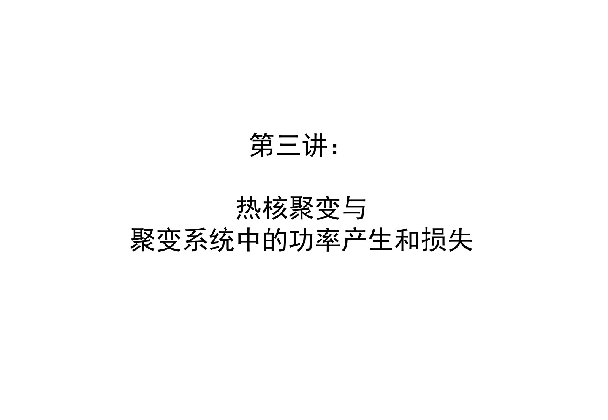
PDF 第 2 页PDF 第 3 页这节课讲热核反应的概念，以及聚变系统中的功率产生和损失。本讲和下一讲是课程前一部分的核心。上节课虽然介绍了不少反应，主要需要记住的是D–T、D–D的两个反应道、D–³He和p–¹¹B。
从中子出发的相关反应不作为这里独立的聚变主反应，但可以用来增殖氚。课件中列出中子与⁶Li、⁷Li的反应：前者吸收中子并放能，后者保留出射中子而吸能。回顾这两个具体反应，是为了说明它们在聚变燃料循环中的作用。接下来通过几道题检查上节课的重要结论。
T02 · 反应性与燃料丰富性是两个指标
时间：02:07–03:50。课件PDF：4、5页。讲义N01
展开对应课件页
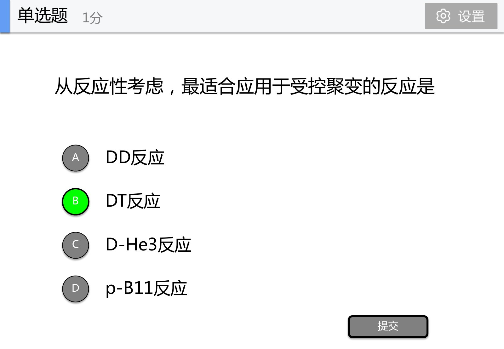
PDF 第 4 页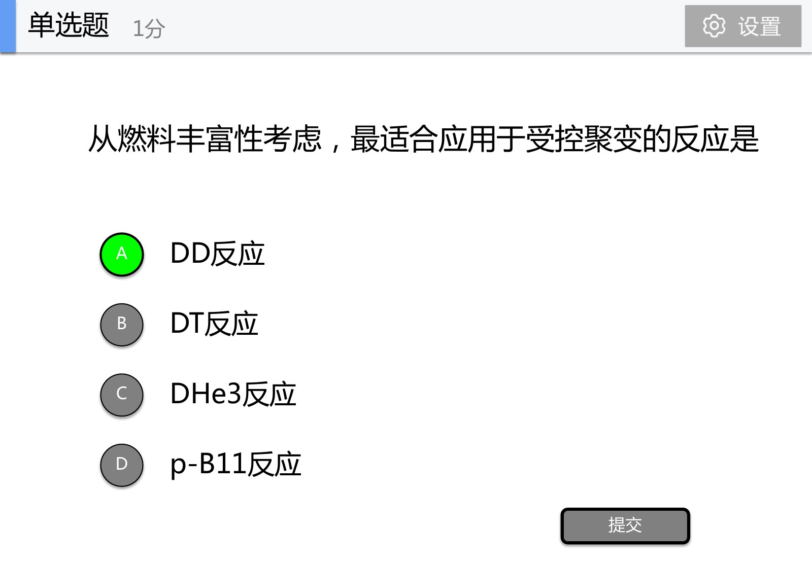
PDF 第 5 页先从反应性考虑：列出的四种反应中，D–T反应最有利。这道题是单选题，课件对应B；大多数同学选对，少数选了D–D。
再从燃料丰富性考虑，答案是D–D，对应A。题目问的是这个特定指标下“最适合”的反应，因此要按单选题的要求找出最突出的特点。每个反应都有自己的标签：D–T突出的是反应性，D–D突出的是燃料丰富。老师借此打了个比方，人也需要形成让别人容易记住的特点。
T03 · 发电效率、产物电性与能源评价
时间：03:50–08:40。课件PDF：6、7、8页。讲义N01
展开对应课件页
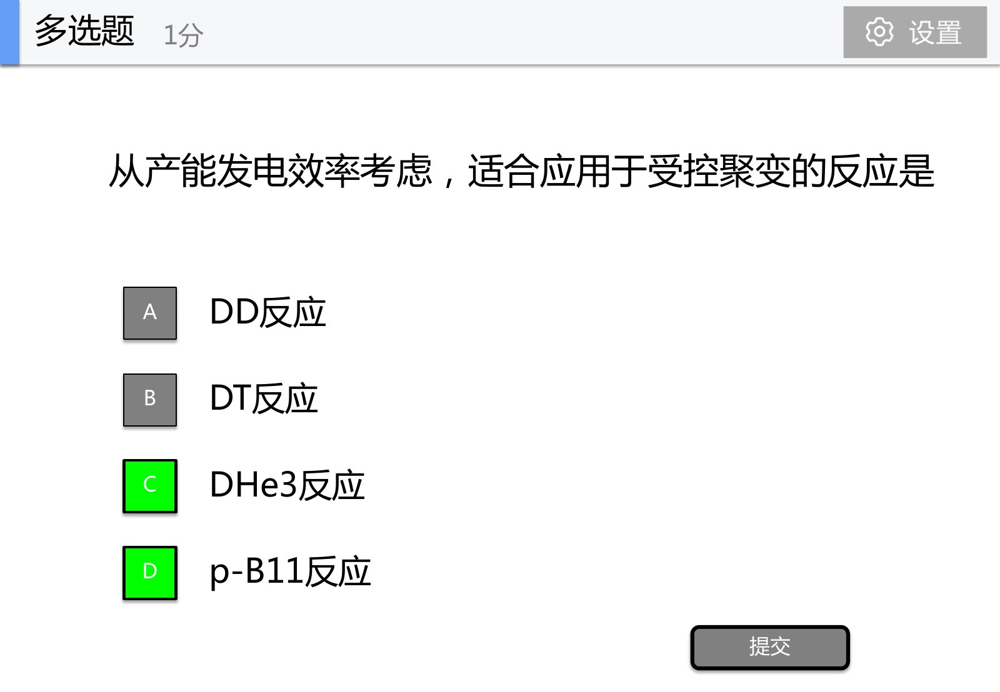
PDF 第 6 页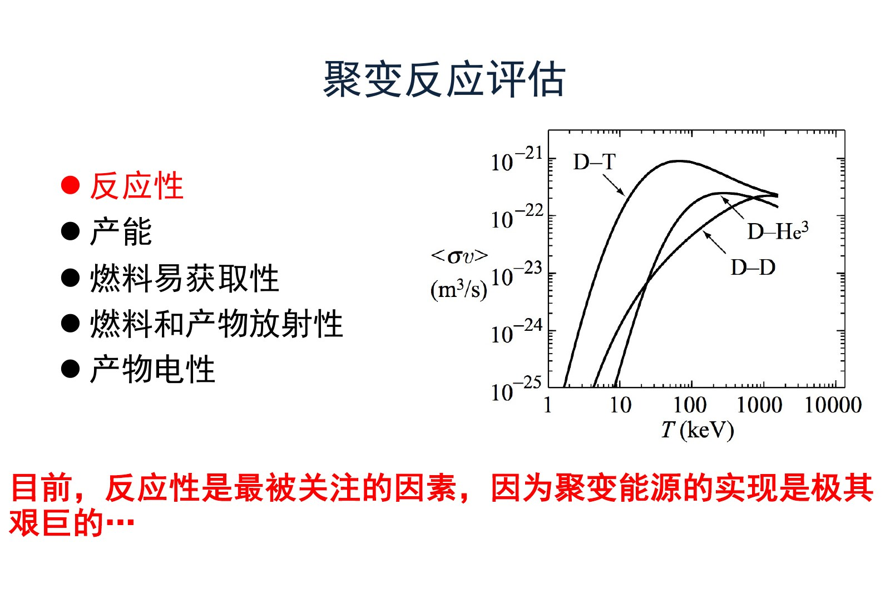
PDF 第 7 页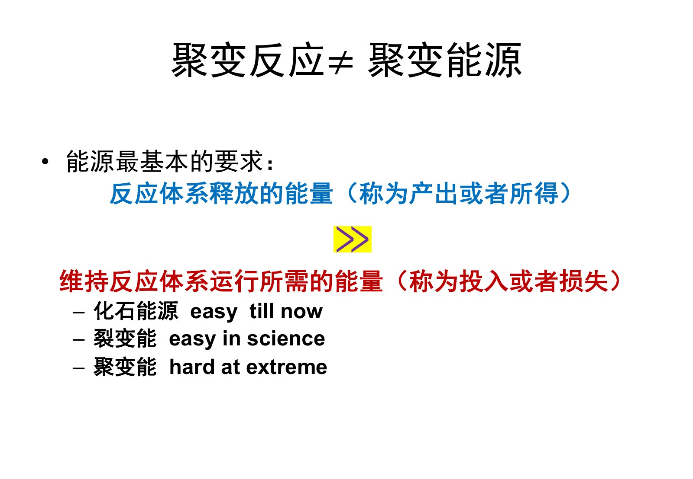
PDF 第 8 页第三题从产能发电效率考虑，是多选题。中子产生后通常先经过慢化、把能量变成热，再经热电转换；如果产物是带电粒子，就有可能直接转换其能量。因此这里关心的是产物有没有中子、能量是否主要由带电产物携带。
课堂围绕“A为什么不选”和是否全选作了短暂讨论，中间有几句零碎答题话语，不能据此确定每个人的完整观点。最后明确的答案是C、D，即D–³He和p–¹¹B。D–D即使考虑催化反应，仍有相当份额的中子能量；D–T更有显著中子产额。D–³He可能有少量伴生中子，不能理解为所有实际反应都绝无中子。
这些反应各有优势，但当前首先关注反应性，因为实现聚变能源非常困难。上节课比较过库仑散射与聚变截面，说明不是只要一个反应能放能，就能成为好的能源。
任何能源都要比较所得与投入：反应体系释放的能量，应远大于维持体系运行所需的能量。前者称产出或所得，后者称投入或损失。最终还要算经济账，即获得收益与所花成本；这门课此处先讨论科学、工程上的能量收支，把资源价格和经济性留在后面。
T04 · 为什么产出需要远大于投入
时间：08:40–11:59。课件PDF：8页。讲义N02
展开对应课件页
PDF 第 8 页为什么写“远远大于”，而不是刚刚大于？因为工程上有一系列效率，每一步都不可能100%。热电转换通常只是百分之三四十；即便某些环节有80%、90%，连续相乘后也会明显降低。两个80%就是64%。所以前端必须留下足够余量，课堂用“一个数量级左右”帮助理解这种余量，并不是在这里给出通用设计标准。
日常燃烧石油时，点火所需能量与燃烧释放的能量相比很少，容易被忽略，但不能说火柴没有投入能量。裂变有链式反应，使启动和持续反应的物理条件与聚变不同。10:26附近关于裂变启动条件的转写破损较重，只能确认老师在作这种比较，不能补成某个具体临界条件。
聚变的困难是维持反应体系的投入很高。即使单次反应放能很多，也未必足以覆盖维持系统的费用。所以必须建立“聚变反应不等于聚变能源”的概念。
老师举未来可能听到的实验消息为例：某装置实现D–T反应并测到相关产物，不代表它已成为能源。这里提到研究机构和可能的实验，是课堂举例，不是本稿独立核实的进展新闻。核心问题始终是：除了发生反应，是否还存在足够的净能量盈余？
T05 · 几十keV的碰撞能量与参考系
时间：11:59–13:33。课件PDF：9页。讲义N03
展开对应课件页
PDF 第 9 页产生少量聚变反应并不难。核之间有库仑势垒，隧穿使反应在低于经典势垒的能量下仍有概率发生。用温度换算，1 eV约对应11600 K，10 keV约对应一亿K。这个宏观温度听起来很高，但让单个带电粒子获得100 keV量级的定向能量，在微观实验中并非同等困难。
D–T截面峰在图上有时约65 keV，有时约100 keV，要先看横坐标是什么。若一张图给质心系碰撞能量，另一张给氘束打静止氚靶的入射能量，就要做参考系换算，不能把不同图的峰位置当成互相矛盾。
电势差能够给带电离子提供定向动能。这说明达到核反应能区与维持宏观热等离子体是不同问题；不能仅凭一个很大的“等效温度”判断是否实现了能源条件。
T06 · 高压提案与早期人工聚变的例子
时间：13:33–16:17。课件PDF：9、10页。讲义N03
展开对应课件页
PDF 第 9 页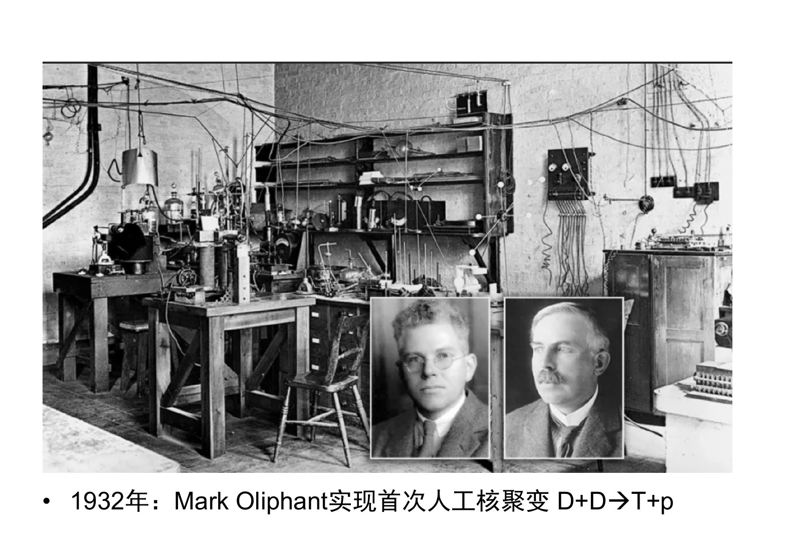
PDF 第 10 页老师讲了一个曾经收到的技术评估故事：有人因为工厂有高压设备，提出加速粒子即可实现聚变，并据此质疑已有研究的必要性。老师借此指出，方案在进入复杂评估流程前，应该先进行基本的科学筛查；“能使粒子发生反应”和“能把它做成净输出能源”不能混为一谈。这段是教师个人经历的课堂叙述，具体人物和流程未作外部核实。
对单电荷氘离子，定向动能来自电势差。老师还提到称为fusor的实验装置，意在说明检测到少量聚变并不是判断能源可行性的充分条件；课堂同时提醒这类装置会产生辐射问题。本稿保留这一概念例子，不展开装置制作或操作。
随后以Oliphant在Rutherford团队中的D–D实验举例：氘核与氘核反应产生氚和质子，出射产物能量体现了核反应放能。这是D–D聚变放能的例子。
T07 · 加速器核能的历史讨论与固体靶问题
时间：16:17–20:42。课件PDF：10、11、12页。讲义N03
展开对应课件页
PDF 第 10 页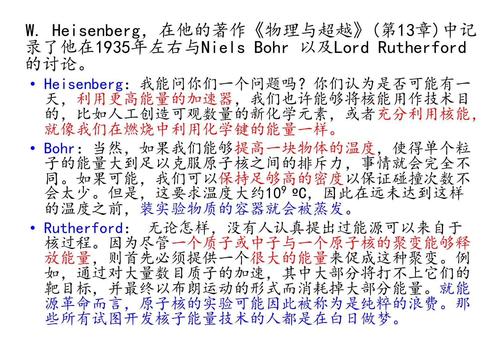
PDF 第 11 页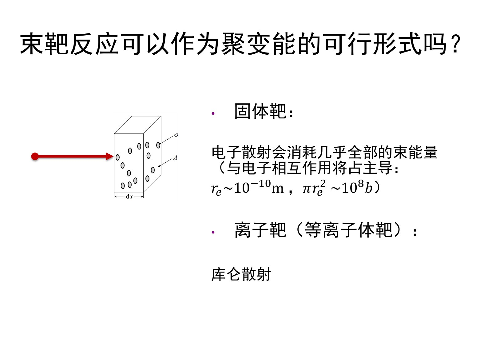
PDF 第 12 页课件接着引用Heisenberg著作中的一段历史讨论。问题是：能否利用更高能加速器，在技术上制造新元素或利用核能？Bohr转而讨论提高温度，使单粒子能量足以克服核间排斥，同时保持较高密度，但也指出高温会使普通容器先被破坏。
Rutherford的回答着重于加速器：尽管一次核反应可能放能，但必须先给大量粒子加速，其中多数不能发生目标反应，能量转入无规则运动，因而难以获得技术收益。课堂提醒，历史人物把结论说得太绝对容易留下漏洞，但不能脱离“高能加速器能否获得能源”这个原问题，只拿后来发现的裂变来反驳当时的具体分析。此处的对话按课件作转述，不作逐字引文。
这段讨论引出本讲真正要算的问题：散射截面与聚变截面的竞争。若打固体靶，核外电子相互作用会先带走大量束能。原子尺度约为10⁻¹⁰ m，按面积估算就是10⁸—10⁹ barn的量级；这是帮助理解的尺度比较。
T08 · 从电子阻止转向离子靶散射
时间：20:42–21:27。课件PDF：12页。讲义N04
展开对应课件页
PDF 第 12 页电子相互作用的尺度很大，而聚变截面的有利峰值也只有几个barn量级，这里用约5 barn作数量级比较。两者相差巨大，所以绝大多数束能会先转入其他过程。
若考虑离子气体或等离子体靶，就要继续讨论带电离子之间的库仑散射。换成等离子体并不会自动消除散射问题；下面先把离子之间的偏转算清楚。
T09 · 瞄准距离、90度散射及长度尺度
时间：21:27–25:38。课件PDF：13、14页。讲义N04
展开对应课件页
PDF 第 13 页PDF 第 14 页经典库仑散射的直观图像是：瞄准距离大，偏转角小；瞄准距离小，偏转角大。课件用90°散射作为显著失去原束方向特征的尺度。这里说沿入射方向的运动被破坏，不是说总能量不守恒；散射后的能量仍存在，只是进入别的方向或粒子。
由课件关系 \(\cot(\theta/2)=b/b_0\)，当 \(\theta=90^\circ\) 时 \(b=b_0\)，相应的有效面积写为 \(\pi b_0^2\)。老师没有在课上完整推导轨道，建议有兴趣的同学根据经典力学尝试。
课堂进一步用接近距离帮助想象两个带电核为什么难以接近：在约10 keV的尺度下，课件给出的长度约1.44×10⁻¹³ m，比核尺度大很多；把这个长度平方后乘π，得到约650 barn。这里比较的是原子核的尺度。
当能量提高到MeV量级，估算长度接近核尺度，不能继续不加检查地使用原来的经典点粒子图像，要考虑量子效应。课件中的90°瞄准距离、正碰最近距离和温度替代关系并不完全同义；其系数差异在讲义N04单独说明。保留课堂的量级目的，但不将1.44×10⁻¹³ m无条件当作10 keV相对动能下的严格90°瞄准距离。
T10 · 醉汉行走、小角散射与库仑对数
时间：25:38–29:27。课件PDF：14、15页。讲义N05
展开对应课件页
PDF 第 14 页PDF 第 15 页上面的图首先讨论一次碰撞，但实际体系有很多粒子。一个离子先偏转一点，随后又被另一个离子偏转一点，多次小角散射会积累。
有人可能会想：这次向上、下次向下，平均不就抵消了吗？这里需要扩散的观点。醉汉在大操场上随机走，每一步没有固定方向，却会随时间逐渐离开起点；不能因为平均位移为零，就认为他总待在原地。对散射同样如此：偏转的平均方向可能抵消，分布宽度却增加，最终可以显著破坏入射方向。
将多种瞄准距离的贡献合并，会出现库仑对数。课件将德拜长度与近碰撞尺度之比取对数，得到 \(\ln\Lambda\)，并用 \(2\ln\Lambda\) 对单次90°散射的有效尺度作增强，示意值约40。
这个过程涉及多粒子统计。课上不要求完整展开，但希望理解小角散射可以累计成显著偏转。感兴趣的同学可把推导作为选做作业。计入这种影响后，在约100 keV以下，图中库仑散射仍远强于D–T聚变，束流往往先热化而不是先大量聚变。
T11 · 20keV束靶示例的投入与产出
时间：29:27–31:26。课件PDF：15页。讲义N06
展开对应课件页
PDF 第 15 页在大量聚变发生之前，入射离子会迅速失去原来的定向束特征，运动方向变得无规则。少数聚变反应释放的能量，往往不足以抵偿最初给整束离子加速的能量。这正是前面历史讨论所指向的问题。
课件用20 keV氘束轰击氚靶作例子：约10⁵个氘离子受到显著散射时，只有不超过一个发生聚变。投入至少要计入 \(20\,\mathrm{keV}\times10^5\) 这一量级，而产出只有一次反应的17.6 MeV。
所以束靶反应能在实验室产生聚变，却不因此成为可行能源形式。老师同时保留一个边界：在某些较高能区，不能只根据当前粗略比较就断言所有方案绝无可能；还需更完整的能量核算。
T12 · 剩余能区与加速器方案选读
时间：31:26–34:10。课件PDF：15、38页。讲义N06
展开对应课件页
PDF 第 15 页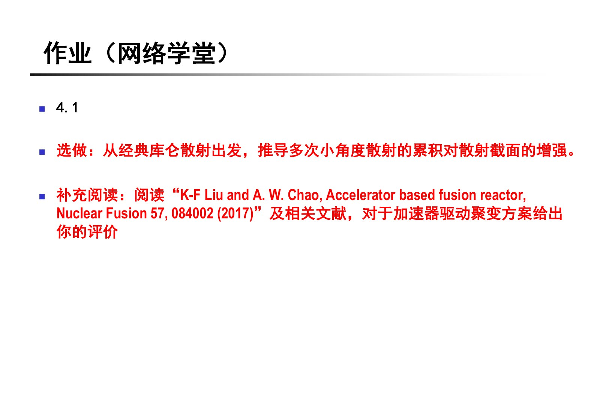
PDF 第 38 页课堂继续比较图中的能区。能量再提高到MeV量级时，即使散射与反应的比例差距减小，每个粒子的投入也已经增加，未必划算。大约100 keV附近，粗略比值看起来可能留下一点余量；离子减速进入截面较大的区间时，也可能产生需要进一步分析的效果。
但“有一点空间”与“远大于投入”差得很远。如果科学模型中的收益只有几倍，工程环节再扣除效率，空间会很小。因此老师建议阅读课件列出的加速器驱动聚变论文，把下面将讨论的更多损失也纳入，而不是仅用一条截面曲线判断。
课堂还提到作者A. W. Chao及其他加速器新想法，说明仍可研究新思路，但必须算完整的能量账。课件书目可在作业入口回查；旁及的另一项目名称未能确定。
T13 · ZETA：聚变中子还需判断产生机制
时间：34:10–36:53。课件PDF：16、17页。讲义N06
展开对应课件页
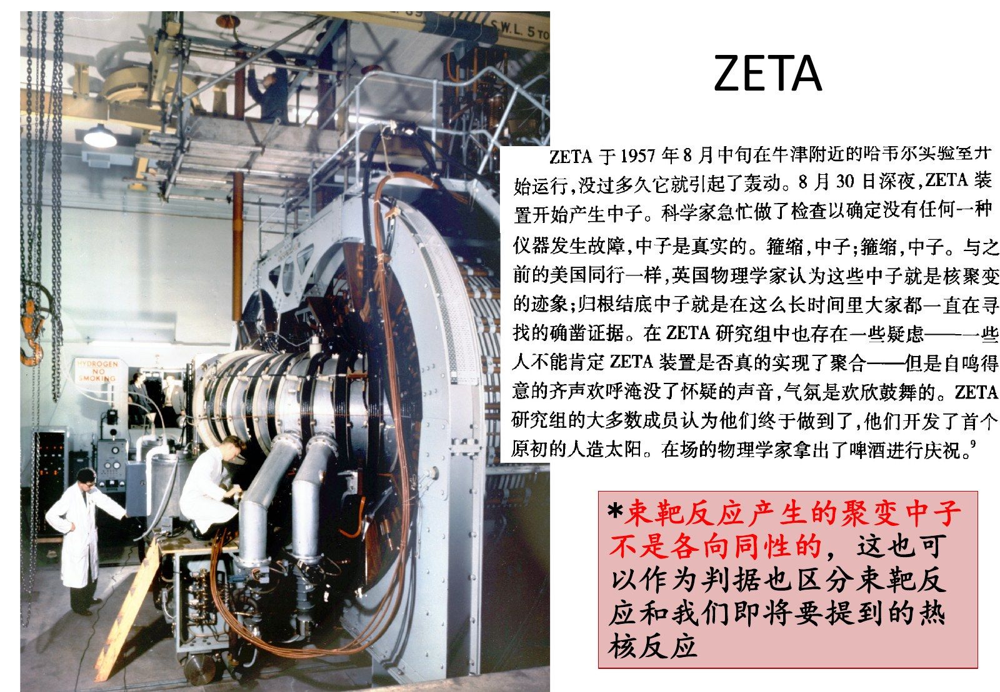
PDF 第 16 页PDF 第 17 页课件以英国ZETA装置说明，早期实验已经能产生聚变中子。箍缩的基本想法是在等离子体中通强电流，电流产生磁场，电流与磁场的作用力把等离子体向内压缩，原本希望形成相应的约束和平衡。
实验中压缩过程出现中子，确实可能来自核聚变，但这并不足以证明已经形成预期的热核状态。课堂借当时的欢呼与疑虑，提醒不要把观察到反应产物和实现预定机制混为一谈。
其中一个检查思路是看中子角分布：束靶过程带有入射方向，课件明确写为“不是各向同性”；近似各向同性的热运动则有不同的角分布特征。真正判定仍需结合实验条件。
于是问题回到：每次反应需要相当的碰撞能量，但把所有粒子定向加速后又会被散射，那么还能怎样组织这个体系？这引向Bohr所说的提高温度，而非一味提高定向束能。
T14 · 温度描述随机运动而非全部能量
时间：36:53–38:45。课件PDF：17、18页。讲义N03
展开对应课件页
PDF 第 17 页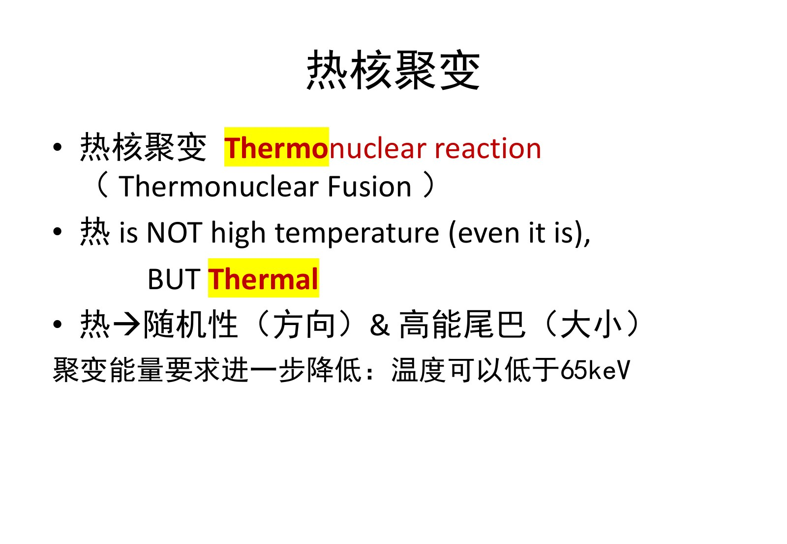
PDF 第 18 页能量与温度是不是同一个概念？并不完全相同。粒子的能量可以含定向运动和随机运动，温度则用来描述随机运动的分布。
加速器束流可以在很高的平均能量附近具有很窄的分布。这个远离零点的平均定向能量，与分布的展宽是两个特征。课堂画分布图，正是要把这两点区分开。
麦克斯韦热分布的温度越高，典型随机能量尺度越大，分布也越宽。不能把一个能散很小的高能束，直接说成具有同样平均能量尺度的热等离子体。图中束能和温度分别在回答不同问题。
T15 · 从瞄准一个靶到在体系内随机相遇
时间：38:45–40:44。课件PDF：17、18、21页。讲义N07
展开对应课件页
PDF 第 17 页PDF 第 18 页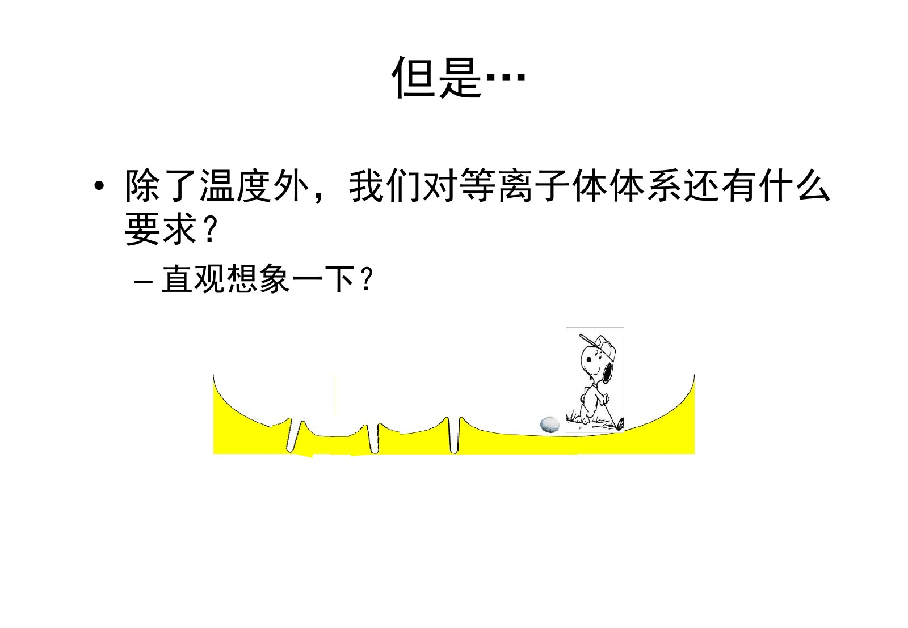
PDF 第 21 页Bohr的思路不是盯着某一个原子核打，而是提高温度，让粒子随机运动。它没与这个核发生聚变，仍然可能和另一个核相遇；如果密度较高，相遇次数也更多。
老师延续高尔夫球的比喻：传统束靶相当于瞄准特定洞，要挥很多次才可能命中一次，但每次挥杆都付出能量。若在场地中增加很多洞，并允许打进任何一个，就改变了寻找目标的方式。
对应到热体系，是先给粒子随机运动的能量，再让它在受约束体系内反复相遇。不需要每偏转一次都把它重新加速成原来的定向束。这个比喻强调能量在体系内的利用；后面还必须检查它会不会跑出边界、会不会先冷却。
T16 · Thermal的含义与高能尾部
时间：40:44–44:51。课件PDF：18页。讲义N07
展开对应课件页
PDF 第 18 页利用热运动随机碰撞的方式称为热核聚变，即thermonuclear fusion，也可称thermonuclear reaction。“热”首先来自thermal，不只是hot。汉语把两者都译为“热”，容易让人以为只要能量高就是同一回事。
thermal强调热运动、随机分布与热平衡的概念；hot强调温度很高。热核聚变在实际燃料条件下确实需要高温，但它的定义重点仍是随机热运动。束流的定向能不能仅靠温度概括，通常还需要平均能量与能散等描述。
热分布还带来高能尾部。平均温度不必达到约65 keV的截面峰能区；在15–20 keV等温度下，仍有较高相对能量的碰撞，可以对聚变反应作出重要贡献。这样不必先把所有粒子都加到同一个峰值能量，再期望它们反应。
课堂把这理解为降低进入有效聚变状态的难度，并对比束靶方案很窄的能量收支窗口。热核体系也仍需密度、约束和功率平衡；这里关于“更大的操作空间”的说法，是物理思路的比较，不是允许忽略其他损失的定量结论。
T17 · 如何阅读“精确瞄准优于高温”的宣传
时间：44:51–46:23。课件PDF：19页。讲义N07
展开对应课件页
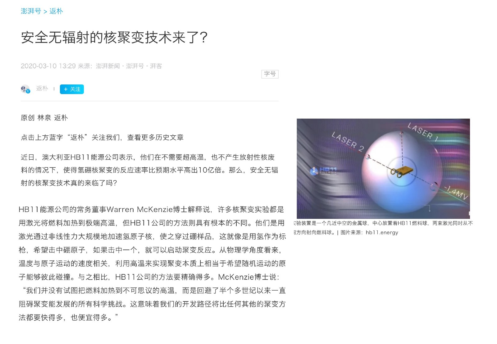
PDF 第 19 页课件展示了一则关于澳大利亚公司路线的旧报道。报道将传统方法描述为把燃料加到极高温，依赖随机碰撞；再把自己的方法描述为加速氢核穿过硼，像投标枪一样击中原子核，并据此宣称更精确、避开高温难题。
老师要求大家用刚学过的知识判断这类表述。热核体系采用随机运动，并不是因为不会瞄准，而是因为必须处理散射与束能热化的问题。“瞄得准”没有回答多少入射粒子真正聚变、维持束流花费多少能量，也没有说明净收益。
这段保留为课堂分析宣传逻辑的例子，不据旧报道认定某家公司当前进展或经营情况。评价一条路线，仍需看可核算的反应率、损失和效率。
T18 · 等离子体与本课程的讲授深度
时间：46:23–49:52。课件PDF：19、20页。讲义N08
展开对应课件页
PDF 第 19 页PDF 第 20 页热核聚变最终主要研究的是高温等离子体。可以从物态变化来理解：较冷时有固体结构，升温后成为液体，再成为原子或分子间距更大的气体；温度继续升高，电子脱离原子，形成自由电子与正离子的体系。
虽然“热核”的第一层含义是随机热运动，但D–T反应需要keV量级的温度，在这样的条件下，氢同位素的电子早已剥离，所以燃料必然处在等离子体状态。对其他高电荷元素是否完全剥离，后面的杂质问题还会说明。
等离子体物理很复杂，本课程只会安排有限篇幅作必要介绍，并在后续内容中按需补充。前面提到的库仑对数就是可以继续深入的例子：有兴趣的同学可以利用现有物理基础推导，不必在概论课中一次掌握完整理论。
老师解释，前半部分会放慢、把基础问题揉碎来讲；后面进入工程部分，时间安排更紧，不能把研究生阶段的整套等离子体理论都放进本课。学习深度可随个人需要继续拓展，但至少应能识别把基本物理关系说反的论证。
T19 · 密度有限时，必须把粒子与能量留住
时间：49:52–54:01。课件PDF：21、22页。讲义N08
展开对应课件页
PDF 第 21 页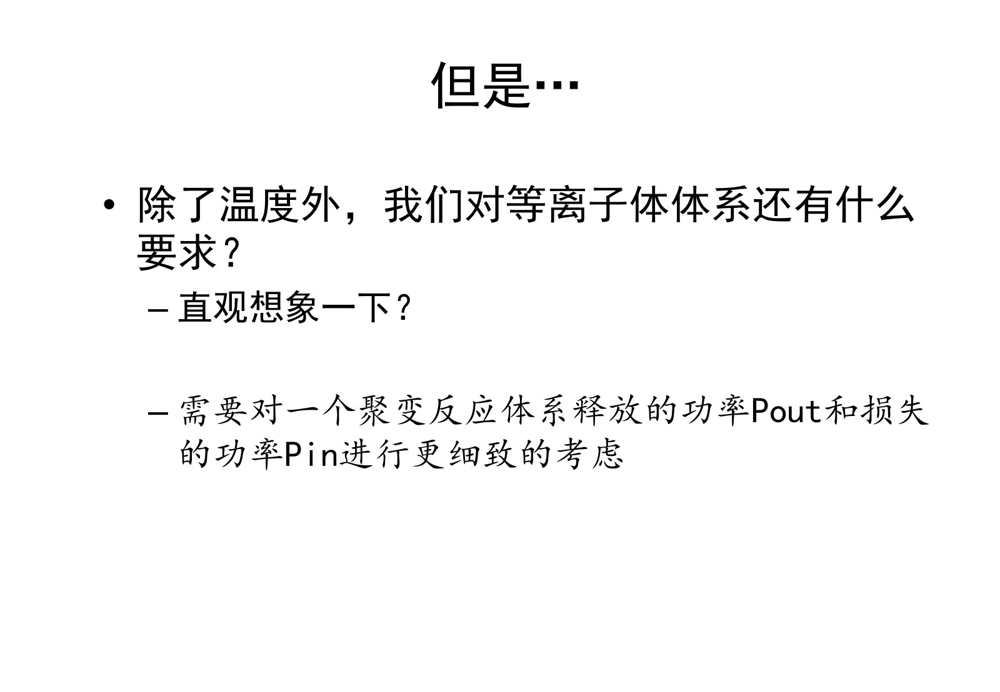
PDF 第 22 页再回到球与洞的比喻：每个洞前都有需要越过的坡，对应反应的能量要求。除了有足够能量，还要有足够相遇机会。提高密度相当于增加洞的密集程度，所以更容易相遇；“密度无穷大”只是一种帮助理解的极限想象，不是可实施的条件。
地面体系的密度有限，粒子可能连续错过几个反应机会。在这段时间里，首先它不能直接跑出边界，否则连继续尝试的机会都没有；其次它的能量也不能损失得太快，否则到了下一次有利相遇时已经不足以反应。
老师用滚动摩擦说明能量损失：球原本也许能在第十一次机会进入洞，却在此前逐渐失去能量，到坡上又滑下来。如果场地理想地完全无损，问题会容易很多，但真实体系不能这样假设。
因此接下来要细算反应体系释放的功率，以及为了补偿损失而必须投入的功率。只提温度和密度不够，还要研究能量能保持多长时间。
T20 · D–T聚变功率、密度口径与数值例子
时间：54:01–57:25。课件PDF：23页。讲义N09
展开对应课件页
PDF 第 23 页老师先提醒，口头讲解有时会简称“能量”“功率”或“功率密度”，但做题时必须分清：功率乘时间才是能量，功率密度再乘体积才是功率；空间不均匀时还要积分。
聚变功率密度最直接：两种燃料的数密度相乘，再乘反应率系数和一次反应释放的能量。对D–T，课上以电子密度n为标准。由于D、T都是单电荷离子，纯燃料中n等于两者密度之和。在固定n时，两者各占n/2，乘积最大，所以出现 \(n^2/4\)。
单次D–T反应能量是17.6 MeV。功率密度与密度平方成正比，反应率系数则是温度函数。课件在8–25 keV范围给出方便计算的平方近似 \(\langle\sigma v\rangle\simeq1.1\times10^{-30}T^2\)，其中T的数值以eV代入。
设一个典型参数：T=10 keV，n=10²⁰ m⁻³，可算得约0.8 MW/m³。老师说明真正反应堆的温度可能取更高一些，这里选10 keV是便于建立数量级。
T21 · 热量传递的三种方式
时间：57:25–01:00:00。课件PDF：24、25、26、27页。讲义N10
展开对应课件页
PDF 第 24 页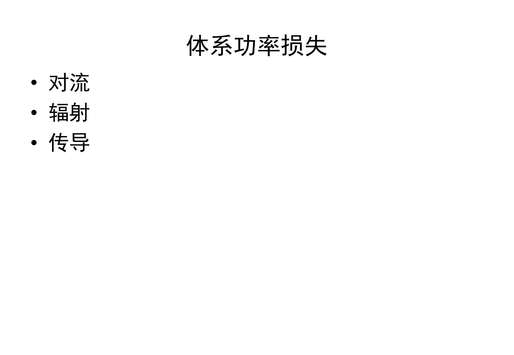
PDF 第 25 页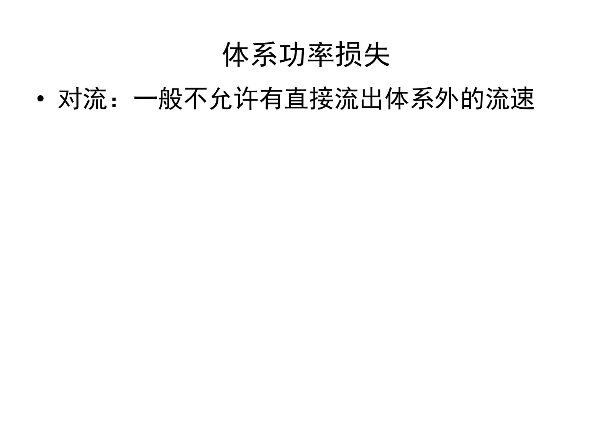
PDF 第 26 页PDF 第 27 页损失项可以从热量传递的基本途径开始。课堂多选题选对流、辐射和传导，A、B、C；“热交换”只是泛指过程，并不是一个与前三者并列的新物理机制。老师也提醒课堂参与本身很重要，不必因担心答错而不参与。
对流是物质整体运动时携带热量。对这个聚变反应体系，不能让很热的燃料直接跑到外面，与冷物质交换后再回来，因此在当前最简讨论中不把直接流出作为允许的主要过程。
传导却普遍存在。反应区要达到很高温度，边缘又必须使材料可以承受，不能整个容器都达到芯部温度。芯部与边界之间存在梯度，必然有向外的能量输运。这正回应了前面历史讨论中的容器问题。
T22 · 傅里叶热流与热扩散系数
时间：01:00:00–01:03:36。课件PDF：27页。讲义N10
展开对应课件页
PDF 第 27 页设想一个高温芯部、较冷边界的剖面，就会有很大的温度梯度。傅里叶导热定律用 \(\mathbf q=-\kappa\nabla T\) 描述热流，\(\kappa\) 是热传导系数。它最初是宏观实验规律，微观上如何确定系数则属于输运理论。
等离子体中也常用热扩散系数 \(\chi\)，课件将相应关系写作 \(\mathbf q=-(3/2)n\chi\nabla T\)。这与内能、密度及所用温度单位有关。做题必须连同密度和温度单位一起看。
使用扩散系数的好处是与其他输运系数具有相似量纲：长度平方除时间，即m²/s。它不是流速m/s。这仍与随机行走有关，典型扩散距离的平方随时间增加。
热流本身是单位时间通过单位面积的能量。对等离子体封闭表面作 \(\oint\mathbf q\cdot d\mathbf S\) 得到向外流出的功率。托卡马克是环形体系，也同样要对整个边界作积分，再除以体积，才是平均传导损失功率密度。
T23 · 从损失功率定义能量约束时间
时间：01:03:36–01:07:04。课件PDF：27、28页。讲义N11
展开对应课件页
PDF 第 27 页PDF 第 28 页表面积分可以用散度定理转换成体积分。再看量纲：nT是能量密度的尺度，χ是长度平方除时间，温度梯度和热流散度带来空间尺度的两次倒数，最后就成为能量密度除以一个时间。
因此不必在本讲先弄清所有微观输运机制，可以唯象地定义 \(S_\kappa=W/\tau_E\)，把复杂的热损失归纳为一个宏观能量约束时间。若不加热、只考虑此项损失并把时间常数视为固定，就有 \(dW/dt=-W/\tau_E\)，内能随时间按指数衰减。
课堂仍取10 keV、10²⁰ m⁻³，课件示例内能写0.24 MJ/m³，若约束时间为1 s，损失功率密度就是0.24 MW/m³，与前面的0.8是相近数量级。这里保留课堂示例数字供回查；电子与离子合计时应按教材使用约0.48 MJ/m³，详细统计口径见讲义N11。课件把这一损失项标成Sf，也应读作Sκ。
T24 · 保温杯比喻与稳态测量
时间：01:07:04–01:09:10。课件PDF：28页。讲义N11
展开对应课件页
PDF 第 28 页能量约束时间非常重要，后面会反复出现。只有热传导损失、没有外加热时，它描述内能指数衰减的时间常数；课件图中一个时间常数后降到1/e。
更形象地说，它刻画系统的保温能力。保温杯里昨晚倒的开水，到早晨仍可能很热；普通杯子则冷得更快。前者相当于更长的能量保持时间。研究等离子体约束的重要目的，就是提高这种保温能力。
实际测量未必必须关掉所有加热等它冷却。也可以一边供热，一边让内能保持恒定：例如持续加热，使水保持同一温度。稳态下需要补偿多少功率，就反映它损失多少能量；在本段只考虑传导的模型中，内能除以加热功率就是约束时间。若还计入其他损失，则要明确使用哪一种约束时间定义。
T25 · 能量约束时间不是放电时长
时间：01:09:10–01:11:41。课件PDF：28页。讲义N11
展开对应课件页
PDF 第 28 页知道体系的密度、温度和体积，就可以估算内能；知道维持状态需要的相应功率，就能通过比值估算约束时间。最重要的是：不能把它与放电时间混为一谈。
仍用水杯作比喻。如果一直在下面加热，让水保持100度，烧两天表示这个状态维持了两天；但并不表示水杯本身的保温时间变成两天。停止补偿后它怎样冷却，是另一件事。
所以宣传“放电1000秒”时，1000秒是运行时长，不能直接放进 \(\tau_E\) 的位置。\(\tau_E\) 是给定运行状态下储能与损失的特征时间；状态参数改变，它也可能改变。后面讲定标律时会进一步讨论它与装置、等离子体参数的关系。
芯部高温而边界较冷的要求，使传导成为不可避免的重要损失。课件示例的0.24 MW/m³与聚变0.8 MW/m³相差不到一个数量级，说明保温问题必须认真处理，不能仅因反应能够放能而略去。
T26 · 辐射种类与轫致辐射的名字
时间：01:11:41–01:15:13。课件PDF：29、30页。讲义N12
展开对应课件页
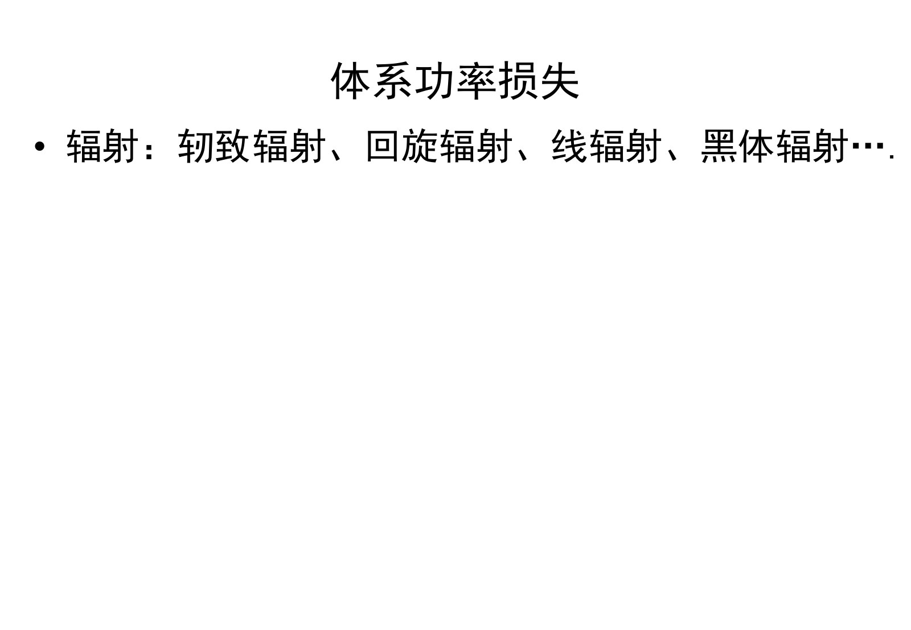
PDF 第 29 页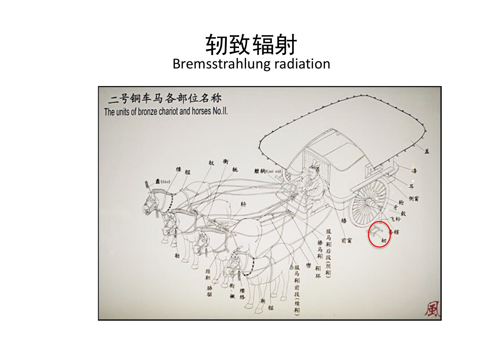
PDF 第 30 页除传导以外，还要考虑辐射。这里包括轫致辐射、回旋辐射、线辐射和黑体辐射等。
最重要的一项是轫致辐射。带电粒子在库仑场中运动，速度发生变化，会发出电磁辐射。英文Bremsstrahlung是来自德语的制动辐射，课堂借“刹车”帮助理解变速的含义。
老师花了一段时间讨论汉字“轫”：古车停放时，用阻挡物避免车轮转动，取走它才可“发轫”。这与使正在运动的车减速的刹车动作不是完全相同。课件展示古车图，老师借此评论翻译的历史趣味，并举“发轫”的用法。
这些词源讨论保留为课堂旁支，不替代辐射物理定义；相关考古与翻译史判断未单独核实。学习上应记住的是带电粒子加速或偏转会辐射，以及这种辐射怎样依赖密度、温度与离子电荷。
T27 · 轫致辐射的密度、温度和有效电荷依赖
时间：01:15:13–01:17:29。课件PDF：31、32页。讲义N12
展开对应课件页
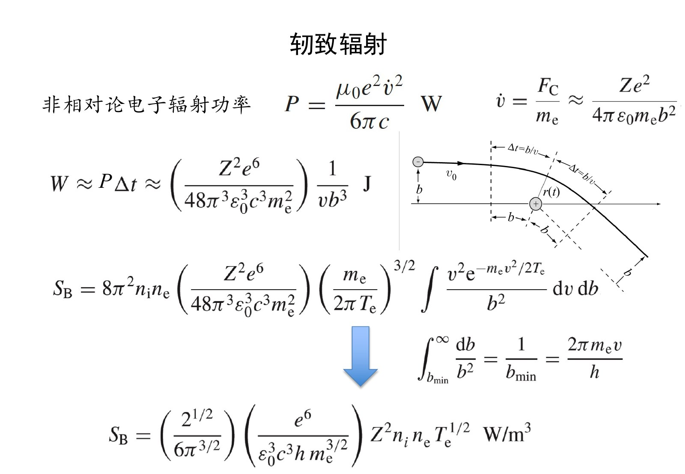
PDF 第 31 页PDF 第 32 页轫致辐射的完整碰撞积分，电动力学基础较好的同学可以自行推导；本课主要要求理解最终依赖哪些量。密度、温度和离子电荷是关键变量，离子电荷影响电子在库仑场中的加速度。
对多种离子，将各离子密度乘其电荷数平方后相加，再除以电子密度，定义有效电荷数 \(Z_{\rm eff}=\sum_jn_jZ_j^2/n_e\)。于是功率密度与 \(Z_{\rm eff}n_e^2\sqrt{T_e}\) 成正比。
与前面的各项比较：聚变功率对密度为平方，轫致辐射也为平方；若暂不考虑约束时间随状态变化，传导项对密度和温度都是一次方。轫致辐射对温度只有平方根依赖，远弱于有效聚变能区内反应率随温度的变化。
因此温度升高时，轫致辐射增长相对较慢。
T28 · 低温阶段辐射为何更显重要
时间：01:17:29–01:19:26。课件PDF：32页。讲义N12
展开对应课件页
PDF 第 32 页仍取10 keV、10²⁰ m⁻³，轫致辐射约0.016 MW/m³，明显小于课件此前的0.24和0.8。
如果温度降到100 eV，降低100倍，轫致辐射只降低10倍，约为0.0016 MW/m³。相比之下，在暂时固定约束时间的课堂比较中，传导随温度降低100倍；聚变功率降得更加剧烈。低温阶段不能把高温时看似较小的辐射简单忽略。平方拟合只在8–25 keV附近适用，低到100 eV时不把外推值当成可靠反应率。
轫致辐射是连续谱，单电子可辐射的能量与其动能有关。在本讲的keV电子条件下，重要光子处于很高频率的X射线等波段。这里课件的“X波段”按教材解释为X射线，避免误读成微波X频段。
T29 · 回旋辐射与再吸收
时间：01:19:26–01:22:27。课件PDF：32、33页。讲义N13
展开对应课件页
PDF 第 32 页PDF 第 33 页对本讲热核等离子体，轫致辐射通常可看作光学薄，产生后容易逃逸，因而是体系损失。外部材料仍可吸收并利用这部分热量，但不能因此说等离子体没有损失。
磁约束体系中的电子绕磁场运动，速度方向不断改变，也会辐射。课件把它称为回旋辐射，并联系同步辐射。数值公式表明它与磁场平方、电子密度和电子温度有关。
在6 T、10 keV、10²⁰ m⁻³下，课件给出的总发射约2 MW/m³，比聚变功率还大。这个数不能直接作为逃逸损失，因为辐射主要处于微波、毫米波范围，可被等离子体再次吸收；壁面反射又使它有机会多次穿过等离子体。
假设98%被重新吸收，只有2%作为净损失，课件约为0.04 MW/m³。这样在当前示例里可以把它作为较小修正。但若温度提高、磁场增强，即使仍假设98%吸收，净损失也可能变大。光学厚不意味着绝对100%吸收，要看具体系统的吸收与反射条件。
T30 · 黑体假设不能无条件使用
时间：01:22:27–01:24:34。课件PDF：34页。讲义N14
展开对应课件页
PDF 第 34 页接着考虑黑体辐射。若直接把10 keV等离子体当成黑体，套用温度四次方的表面辐射公式，会算出极其巨大的结果。但老师马上提出：这个假设为什么不成立？不能先把它当黑体，算完后又把巨大数值当作真实损失。
与地面稀薄磁约束体系相比，太阳内部的辐射会反复被吸收，不能直接从核心自由跑出；最终从太阳表面发出的光谱可近似按黑体考虑。地面聚变等离子体对各频段的光学性质不同，要按具体发射、吸收过程计算。
所以并不是听到“辐射”就把所有熟悉的公式都加上，也不是课上简化掉某项就说明它不存在。以回旋辐射为例，当前D–T示例可能较小，但更高温、强磁场的其他燃料路线可能需要重新考虑。
T31 · 线辐射、杂质与有效电荷数
时间：01:24:34–01:26:38。课件PDF：35页。讲义N15
展开对应课件页
PDF 第 35 页线辐射来自核外束缚电子的能级跃迁，表现为特征谱线。对于很热、充分电离的氢同位素燃料，束缚电子已经剥离，芯部相应线辐射很弱；较冷边界仍可出现谱线。
高电荷杂质不同，例如钨可能还保留内层电子，所以不能说高温时所有元素都没有线辐射。原稿在01:24:34附近用“不是连续的，所以能量很小”作解释，这不能作为一般结论；谱线的总功率还取决于强度。这里保留这处论证疑点，不把它整理成普遍规律。
杂质还影响有效电荷数。一个电荷数很高的离子，即使数目份额不大，在 \(n_jZ_j^2\) 中也会有显著贡献。课堂用四五十这样的电荷数说明平方加权的效果。
需要区别两个平方：离子的电荷数平方出现在 \(Z_{\rm eff}\) 定义中，而轫致功率对 \(Z_{\rm eff}\) 本身是一次方。最粗的纯燃料模型暂不展开完整杂质输运，但这个影响不能在真实系统里直接抹掉。
T32 · 汇总产生与损失，比较高温和低温
时间：01:26:38–01:30:00。课件PDF：36页。讲义N16
展开对应课件页
PDF 第 36 页这节课主要是先把每个基本过程看清楚。所得项是聚变功率，对等比例D–T为 \(S_f=n^2\langle\sigma v\rangle E_f/4\)。最简损失至少包括热传导和轫致辐射；对流在当前模型里不作主要项，传导则不可忽略。
传导用内能密度除以能量约束时间表示。轫致辐射确定存在，只是相对重要性随温度变化：较低温阶段它相对更重要，进入较高温工作区后，聚变反应率上升更快。回旋总发射也存在，但本例因强再吸收，净损失较小。
课件最后列出10 keV与100 eV的对比。高温栏中，聚变功率约0.8，课件传导示例约0.24，轫致约0.016；回旋净损失较小。100 eV时，反应率已远低于有利工作区，不能仍把平方拟合当作精确公式；传导和轫致损失的相对重要性反而上升。
各项到底能否忽略，还要看磁场、温度、密度和约束条件。尤其温度很高、磁场很强时，之前较小的项可能变大。原始小结表存在与前页数值不一致的地方，统一口径复算见讲义N16，课堂原表仍可在对应课件中对照。
T33 · 总产出与损失还需要系统边界
时间：01:30:00–01:31:48。课件PDF：36、37页。讲义N17
展开对应课件页
PDF 第 36 页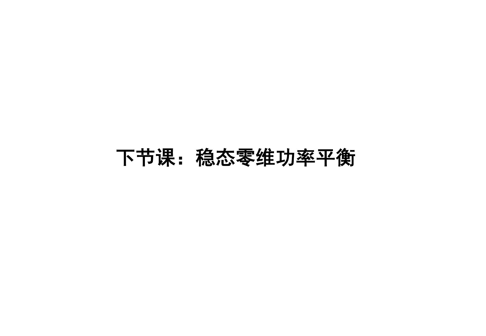
PDF 第 37 页评价一个反应，不能只看峰值反应性有多高，还要看这个峰对应多高温度。工作点要求更高温度，可能同时带来更强损失，所以反应性曲线需要与能量账放在一起。
现在已有聚变产出和若干损失，是否只要 \(S_f\ge S_B+S_\kappa\) 就足够？直觉上像是如此，但这里还有含义需要分清。后面会讨论不同定义的增益，不能拿一个没有说明边界的比值代替全部条件。
一方面，辐射和传导离开等离子体的能量，可以在外部材料中被吸收，转成可利用热量；另一方面，聚变产能也不能以100%的效率转换成最终用途的能量。此处具体效率数值无法确定，应在建立模型时说明所取效率。
下一讲将继续讨论稳态零维功率平衡。课件最后一页另列必做4.1、小角散射选做和论文选读；这些要求在讲义作业入口登记，转写末尾没有清楚读出整张作业页，因此不把课件内容补成这段教师原话。